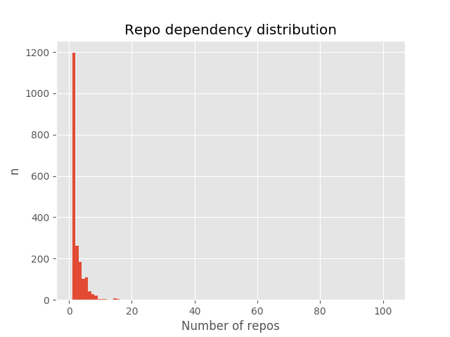

787 repos
629 repos missing dependencies
- /numpy/numpy (102)
- /matplotlib/matplotlib (76)
- /scipy/scipy (74)
- /pandas-dev/pandas (44)
- /pytest-dev/pytest (39)
- /sphinx-doc/sphinx (33)
- /jupyter/jupyter (21)
- /pytest-dev/pytest-cov (21)
- /nose-devs/nose (20)
- /psf/requests (18)
- /scikit-learn/scikit-learn (18)
- /numpy/numpydoc (17)
- /ipython/ipython (16)
- /benjaminp/six (16)
- /nedbat/coveragepy (16)
- /python-pillow/Pillow (16)
- /readthedocs/sphinx_rtd_theme (16)
- /onlytiancai/flake8 (15)
- /jupyter-widgets/ipywidgets (15)
- /tqdm/tqdm (15)
- /numba/numba (15)
- /paxan/python-dateutil (15)
- /cython/cython (15)
- /sphinx-gallery/sphinx-gallery (14)
- /h5py/h5py (14)
- /stub42/pytz (13)
- /scikit-image/scikit-image (13)
- /pyparsing/pyparsing (12)
- /pallets/jinja (12)
- /codecov/codecov-python (12)
- /sympy/sympy (12)
- /lodash/lodash (11)
- /certifi/python-certifi (11)
- /pydata/xarray (11)
- /yaml/pyyaml (10)
- /pallets/click (10)
- /mwaskom/seaborn (10)
- /isaacs/core-util-is (9)
- /substack/node-mkdirp (9)
- /juliangruber/isarray (9)
- /sindresorhus/object-assign (9)
- /sindresorhus/resolve-from (9)
- /zeit/ms (9)
- /ashtuchkin/iconv-lite (9)
- /npm/node-semver (9)
- /substack/minimist (9)
- /feross/safe-buffer (9)
- /visionmedia/debug (9)
- /isaacs/inherits (9)
- /giampaolo/psutil (9)
- /chardet/chardet (9)
- /kjd/idna (9)
- /urllib3/urllib3 (9)
- /pallets/markupsafe (9)
- /matplotlib/cycler (9)
- /erickt/pygments (9)
- /equinor/segyio (9)
- /simpeg/simpeg (9)
- /substack/node-concat-map (8)
- /ChALkeR/safer-buffer (8)
- /sindresorhus/is-fullwidth-code-point (8)
- /isaacs/minimatch (8)
- /chalk/ansi-regex (8)
- /calvinmetcalf/process-nextick-args (8)
- /npm/inflight (8)
- /sindresorhus/path-is-absolute (8)
- /nodejs/string_decoder (8)
- /nodeca/js-yaml (8)
- /juliangruber/balanced-match (8)
- /isaacs/fs.realpath (8)
- /chalk/strip-ansi (8)
- /npm/wrappy (8)
- /isaacs/rimraf (8)
- /sindresorhus/string-width (8)
- /isaacs/once (8)
- /juliangruber/brace-expansion (8)
- /tapjs/signal-exit (8)
- /nodejs/readable-stream (8)
- /isaacs/node-glob (8)
- /alexei/sprintf.js (8)
- /TooTallNate/util-deprecate (8)
- /PyCQA/pylint (8)
- /jquast/wcwidth (8)
- /Distrotech/setuptools (8)
- /coveralls-clients/coveralls-python (8)
- /PythonCharmers/python-future (8)
- /sphinx-contrib/napoleon (8)
- /isaacs/isexe (7)
- /maxogden/concat-stream (7)
- /sindresorhus/globals (7)
- /moxystudio/node-cross-spawn (7)
- /sindresorhus/pify (7)
- /babel/babel (7)
- /lydell/js-tokens (7)
- /npm/node-which (7)
- /zloirock/core-js (7)
- /isaacs/node-graceful-fs (7)
- /nodeca/argparse (7)
- /chalk/supports-color (7)
- /jshttp/mime-db (7)
- /Raynos/function-bind (7)
- /Qix-/color-convert (7)
- /estools/esutils (7)
- /mishoo/UglifyJS2 (7)
- /mozilla/source-map (7)
- /chalk/ansi-styles (7)
- /substack/typedarray (7)
- /sindresorhus/has-flag (7)
- /ljharb/qs (7)
- /jquery/esprima (7)
- /chalk/chalk (7)
- /acornjs/acorn (7)
- /sindresorhus/escape-string-regexp (7)
- /jshttp/mime-types (7)
- /jensyt/imurmurhash-js (7)
- /isaacs/yallist (7)
- /colorjs/color-name (7)
- /yargs/set-blocking (7)
- /dask/dask (7)
- /micheles/decorator (7)
- /PyCQA/mccabe (7)
- /pypa/packaging (7)
- /davidhalter/jedi (7)
- /sindresorhus/number-is-nan (7)
- /sindresorhus/os-tmpdir (7)
- /epoberezkin/ajv (7)
- /Python-Markdown/markdown (7)
- /webpack/webpack (7)
- /Unidata/netcdf4-python (7)
- /python-excel/xlrd (6)
- /sindresorhus/locate-path (6)
- /jshttp/proxy-addr (6)
- /jshttp/etag (6)
- /jonschlinkert/repeat-string (6)
- /jshttp/fresh (6)
- /jshttp/content-type (6)
- /tj/commander.js (6)
- /isaacs/pseudomap (6)
- /sindresorhus/load-json-file (6)
- /npm/normalize-package-data (6)
- /jslicense/spdx-correct.js (6)
- /jshttp/forwarded (6)
- /jshttp/http-errors (6)
- /jonathanong/ee-first (6)
- /tarruda/has (6)
- /jshttp/on-finished (6)
- /sindresorhus/p-try (6)
- /pillarjs/parseurl (6)
- /sindresorhus/path-type (6)
- /jshttp/negotiator (6)
- /yargs/cliui (6)
- /felixge/node-delayed-stream (6)
- /sindresorhus/decamelize (6)
- /kemitchell/validate-npm-package-license.js (6)
- /sindresorhus/strip-json-comments (6)
- /sindresorhus/p-locate (6)
- /jaredhanson/utils-merge (6)
- /sindresorhus/pkg-dir (6)
- /jshttp/vary (6)
- /expressjs/express (6)
- /yargs/yargs (6)
- /jshttp/methods (6)
- /sindresorhus/p-limit (6)
- /jslicense/spdx-expression-parse.js (6)
- /component/escape-html (6)
- /sindresorhus/os-homedir (6)
- /jbgutierrez/path-parse (6)
- /jshttp/media-typer (6)
- /dougwilson/nodejs-depd (6)
- /jshttp/content-disposition (6)
- /Qix-/node-is-arrayish (6)
- /sindresorhus/strip-bom (6)
- /jshttp/cookie (6)
- /stream-utils/destroy (6)
- /sindresorhus/camelcase (6)
- /pillarjs/path-to-regexp (6)
- /sindresorhus/read-pkg (6)
- /sindresorhus/find-up (6)
- /jshttp/range-parser (6)
- /mathiasbynens/jsesc (6)
- /ljharb/object-keys (6)
- /jshttp/statuses (6)
- /substack/node-wordwrap (6)
- /blakeembrey/array-flatten (6)
- /whitequark/ipaddr.js (6)
- /broofa/node-mime (6)
- /sindresorhus/read-pkg-up (6)
- /thlorenz/convert-source-map (6)
- /stream-utils/unpipe (6)
- /jshttp/accepts (6)
- /npm/hosted-git-info (6)
- /sindresorhus/parse-json (6)
- /jshttp/type-is (6)
- /LinusU/buffer-from (6)
- /pillarjs/finalhandler (6)
- /sindresorhus/to-fast-properties (6)
- /pillarjs/encodeurl (6)
- /tj/node-cookie-signature (6)
- /wesleytodd/setprototypeof (6)
- /shinnn/spdx-license-ids (6)
- /sindresorhus/path-exists (6)
- /ljharb/define-properties (6)
- /DefinitelyTyped/DefinitelyTyped (6)
- /feross/is-buffer (6)
- /caolan/async (6)
- /Qix-/node-error-ex (6)
- /pillarjs/send (6)
- /browserify/resolve (6)
- /expressjs/serve-static (6)
- /component/merge-descriptors (6)
- /alexindigo/asynckit (6)
- /isaacs/node-lru-cache (6)
- /jonschlinkert/kind-of (6)
- /kinverarity1/lasio (6)
- /davidhalter/parso (6)
- /mozilla/bleach (6)
- /pypa/wheel (6)
- /pytest-dev/pytest-runner (6)
- /moll/json-stringify-safe (6)
- /eslint/eslint (6)
- /chalk/has-ansi (6)
- /sindresorhus/globby (6)
- /sindresorhus/array-union (6)
- /sindresorhus/is-path-cwd (6)
- /kevva/shebang-command (6)
- /sindresorhus/shebang-regex (6)
- /sindresorhus/code-point-at (6)
- /epoberezkin/fast-deep-equal (6)
- /sindresorhus/del (6)
- /epoberezkin/json-schema-traverse (6)
- /sindresorhus/is-path-inside (6)
- /PyCQA/pycodestyle (6)
- /simplegeo/shapely (6)
- /obspy/obspy (6)
- /pallets/flask (6)
- /pallets/werkzeug (6)
- /seequent/properties (6)
- /python-attrs/attrs (6)
- /pytest-dev/py (6)
- /mochajs/mocha (5)
- /Raynos/xtend (5)
- /facebook/regenerator (5)
- /petkaantonov/bluebird (5)
- /inspect-js/is-regex (5)
- /troygoode/node-require-directory (5)
- /visionmedia/bytes.js (5)
- /sindresorhus/make-dir (5)
- /justmoon/node-extend (5)
- /nexdrew/which-module (5)
- /yargs/require-main-filename (5)
- /ljharb/es-to-primitive (5)
- /mathiasbynens/he (5)
- /form-data/form-data (5)
- /jslicense/spdx-exceptions.json (5)
- /expressjs/body-parser (5)
- /chalk/wrap-ansi (5)
- /ljharb/es-abstract (5)
- /yargs/y18n (5)
- /inspect-js/is-callable (5)
- /felixge/node-combined-stream (5)
- /stefanpenner/get-caller-file (5)
- /yargs/yargs-parser (5)
- /stream-utils/raw-body (5)
- /kelektiv/node-uuid (5)
- /component/emitter (5)
- /iarna/wide-align (5)
- /inspect-js/is-symbol (5)
- /inspect-js/has-symbols (5)
- /inspect-js/is-date-object (5)
- /suguru03/neo-async (5)
- /nucleic/kiwi (5)
- /ipython/traitlets (5)
- /pickleshare/pickleshare (5)
- /dask/distributed (5)
- /pypa/pip (5)
- /zeromq/pyzmq (5)
- /jupyter/nbconvert (5)
- /prompt-toolkit/python-prompt-toolkit (5)
- /gsnedders/python-webencodings (5)
- /ipython/ipython_genutils (5)
- /statsmodels/statsmodels (5)
- /Julian/jsonschema (5)
- /Hectorsito20/twine (5)
- /json5/json5 (5)
- /request/tunnel-agent (5)
- /microsoft/TypeScript (5)
- /joyent/node-jsprim (5)
- /rvagg/isstream (5)
- /request/caseless (5)
- /andyperlitch/jsbn (5)
- /request/request (5)
- /estools/estraverse (5)
- /joyent/node-asn1 (5)
- /evanw/node-source-map-support (5)
- /joyent/node-bcrypt-pbkdf (5)
- /trentm/node-dashdash (5)
- /kriszyp/json-schema (5)
- /joyent/node-assert-plus (5)
- /sindresorhus/mimic-fn (5)
- /request/forever-agent (5)
- /nodejs/nan (5)
- /hughsk/is-typedarray (5)
- /garycourt/uri-js (5)
- /ahmadnassri/har-schema (5)
- /joyent/node-extsprintf (5)
- /estools/esrecurse (5)
- /bestiejs/punycode.js (5)
- /tj/co (5)
- /epoberezkin/fast-json-stable-stringify (5)
- /sindresorhus/trim-right (5)
- /zertosh/loose-envify (5)
- /aduh95/ecc-jsbn (5)
- /eslint/eslint-scope (5)
- /kaelzhang/node-ignore (5)
- /dchest/tweetnacl-js (5)
- /request/aws-sign (5)
- /arekinath/node-getpass (5)
- /zertosh/invariant (5)
- /joyent/node-sshpk (5)
- /joyent/node-http-signature (5)
- /myrne/performance-now (5)
- /sindresorhus/slash (5)
- /joyent/node-verror (5)
- /matplotlib/pytest-mpl (5)
- /epoberezkin/ajv-keywords (5)
- /floatdrop/pinkie-promise (5)
- /floatdrop/pinkie (5)
- /sindresorhus/is-path-in-cwd (5)
- /sindresorhus/array-uniq (5)
- /domenic/path-is-inside (5)
- /iarna/aproba (5)
- /pytorch/vision (5)
- /apaszke/pytorch-dist (5)
- /SciTools/cartopy (5)
- /spatialaudio/nbsphinx (5)
- /astropy/astropy (5)
- /simpeg/discretize (5)
- /simpeg/pymatsolver (5)
- /bitprophet/alabaster (5)
- /webpack-contrib/file-loader (5)
- /gitpython-developers/GitPython (5)
- /networkx/networkx (5)
- /tensorflow/tensorflow (4)
- /es-shims/Object.getOwnPropertyDescriptors (4)
- /avajs/find-cache-dir (4)
- /substack/node-optimist (4)
- /ecomfe/babel-runtime (4)
- /wycats/handlebars.js (4)
- /zkat/json-parse-better-errors (4)
- /substack/node-commondir (4)
- /shinyoshiaki/oculus-quest-remote-desktop (4)
- /sindresorhus/is-stream (4)
- /istanbuljs/istanbuljs (4)
- /then/is-promise (4)
- /timothycrosley/isort (4)
- /jupyter/jupyter_core (4)
- /ionelmc/python-lazy-object-proxy (4)
- /pexpect/pexpect (4)
- /jgm/pandocfilters (4)
- /lepture/mistune (4)
- /jupyter/jupyter_console (4)
- /jupyter/terminado (4)
- /PyCQA/astroid (4)
- /tornadoweb/tornado (4)
- /html5lib/html5lib-python (4)
- /pytoolz/toolz (4)
- /GrahamDumpleton/wrapt (4)
- /ipython/ipykernel (4)
- /jupyter/nbformat (4)
- /hsoft/send2trash (4)
- /jupyter/jupyter_client (4)
- /jupyter/qtconsole (4)
- /pexip/os-ptyprocess (4)
- /jupyter/testpath (4)
- /gkz/levn (4)
- /jonschlinkert/is-accessor-descriptor (4)
- /jonschlinkert/for-in (4)
- /SBoudrias/run-async (4)
- /antz29/node-base (4)
- /here-be/snapdragon-util (4)
- /gulpjs/glob-parent (4)
- /sindresorhus/p-map (4)
- /jonschlinkert/map-visit (4)
- /jonschlinkert/arr-diff (4)
- /jonschlinkert/static-extend (4)
- /hiddentao/fast-levenshtein (4)
- /jonschlinkert/assign-symbols (4)
- /jonschlinkert/normalize-path (4)
- /royriojas/flat-cache (4)
- /jonschlinkert/get-value (4)
- /acornjs/acorn-jsx (4)
- /micromatch/micromatch (4)
- /jonschlinkert/split-string (4)
- /chalk/slice-ansi (4)
- /knownasilya/cli-width (4)
- /jonschlinkert/isobject (4)
- /jonschlinkert/regex-not (4)
- /SBoudrias/Inquirer.js (4)
- /jonschlinkert/repeat-element (4)
- /jonschlinkert/collection-visit (4)
- /sindresorhus/indent-string (4)
- /jonschlinkert/mixin-deep (4)
- /micromatch/is-extglob (4)
- /here-be/snapdragon-node (4)
- /jonschlinkert/use (4)
- /micromatch/nanomatch (4)
- /jonschlinkert/fragment-cache (4)
- /visionmedia/node-progress (4)
- /micromatch/anymatch (4)
- /jonschlinkert/has-value (4)
- /eslint/espree (4)
- /jonschlinkert/unset-value (4)
- /gkz/type-check (4)
- /gkz/optionator (4)
- /jonschlinkert/array-unique (4)
- /ahmadnassri/node-har-validator (4)
- /lydell/resolve-url (4)
- /salesforce/tough-cookie (4)
- /node-browser-compat/atob (4)
- /SamVerschueren/decode-uri-component (4)
- /jonschlinkert/union-value (4)
- /jonschlinkert/map-cache (4)
- /mafintosh/end-of-stream (4)
- /micromatch/posix-character-classes (4)
- /fsevents/fsevents (4)
- /request/oauth-sign (4)
- /mafintosh/pump (4)
- /sindresorhus/onetime (4)
- /jonschlinkert/is-number (4)
- /jonschlinkert/copy-descriptor (4)
- /isaacs/sax-js (4)
- /lupomontero/psl (4)
- /jonschlinkert/class-utils (4)
- /jonschlinkert/cache-base (4)
- /jonschlinkert/is-extendable (4)
- /jonschlinkert/extend-shallow (4)
- /mhart/aws4 (4)
- /gajus/table (4)
- /thlorenz/deep-is (4)
- /here-be/snapdragon (4)
- /micromatch/braces (4)
- /jonschlinkert/object-copy (4)
- /sindresorhus/restore-cursor (4)
- /jonschlinkert/has-values (4)
- /substack/text-table (4)
- /lydell/urix (4)
- /Cronos87/atom-doctrine (4)
- /jonschlinkert/set-value (4)
- /emiljohansson/is-windows (4)
- /royriojas/file-entry-cache (4)
- /darsain/remove-trailing-separator (4)
- /micromatch/expand-brackets (4)
- /micromatch/extglob (4)
- /sindresorhus/cli-cursor (4)
- /jonschlinkert/is-descriptor (4)
- /katsuhiko/through (4)
- /sindresorhus/is-wsl (4)
- /fent/ret.js (4)
- /jonschlinkert/pascalcase (4)
- /sindresorhus/figures (4)
- /jonschlinkert/fill-range (4)
- /jonschlinkert/is-plain-object (4)
- /jonschlinkert/arr-flatten (4)
- /micromatch/is-glob (4)
- /lydell/source-map-resolve (4)
- /lydell/source-map-url (4)
- /jonschlinkert/object.pick (4)
- /raszi/node-tmp (4)
- /npm/mute-stream (4)
- /jonschlinkert/is-directory (4)
- /sindresorhus/callsites (4)
- /jonschlinkert/to-object-path (4)
- /micromatch/to-regex-range (4)
- /litejs/natural-compare-lite (4)
- /jonschlinkert/is-data-descriptor (4)
- /jonschlinkert/define-property (4)
- /jonschlinkert/arr-union (4)
- /gkz/prelude-ls (4)
- /jonschlinkert/to-regex (4)
- /jonschlinkert/write (4)
- /sindresorhus/caller-path (4)
- /sindresorhus/get-stdin (4)
- /davidtheclark/cosmiconfig (4)
- /substack/safe-regex (4)
- /sindresorhus/ansi-escapes (4)
- /estools/esquery (4)
- /jonschlinkert/object-visit (4)
- /PyCQA/pyflakes (4)
- /iarna/has-unicode (4)
- /npm/npmlog (4)
- /npm/are-we-there-yet (4)
- /sindresorhus/arrify (4)
- /iarna/console-control-strings (4)
- /follow-redirects/follow-redirects (4)
- /npm/gauge (4)
- /tj/node-delegates (4)
- /pyproj4/pyproj (4)
- /tensorflow/tensorboard (4)
- /python-excel/xlwt (4)
- /isaacs/abbrev-js (4)
- /npm/nopt (4)
- /npm/ini (4)
- /npm/osenv (4)
- /isaacs/chownr (4)
- /vuejs/vue (4)
- /simpeg/geoana (4)
- /tartley/colorama (4)
- /Leaflet/Leaflet (4)
- /pytest-dev/pluggy (4)
- /babel/babel-bridge (4)
- /webpack-contrib/css-loader (4)
- /babel/babel-loader (4)
- /webpack-contrib/style-loader (4)
- /webpack/webpack-dev-server (4)
- /jviereck/regjsparser (4)
- /mathiasbynens/regenerate (4)
- /sindresorhus/repeating (4)
- /postcss/autoprefixer (4)
- /sindresorhus/is-plain-obj (4)
- /sindresorhus/is-finite (4)
- /benjamn/private (4)
- /mathiasbynens/regexpu-core (4)
- /bnjmnt4n/regjsgen (4)
- /pyscience-projects/pyevtk (4)
- /mesonbuild/meson (4)
- /imageio/imageio (4)
- /postmates/pep8 (4)
- /jmcnamara/XlsxWriter (3)
- /django/django (3)
- /jakubpawlowicz/clean-css (3)
- /jonschlinkert/window-size (3)
- /then/promise (3)
- /tj/node-growl (3)
- /ljharb/object.assign (3)
- /jonschlinkert/lazy-cache (3)
- /doowb/ansi-colors (3)
- /mongodb/js-bson (3)
- /mongodb/node-mongodb-native (3)
- /kpdecker/jsdiff (3)
- /ForbesLindesay/uglify-to-browserify (3)
- /sindresorhus/log-symbols (3)
- /kumavis/browser-stdout (3)
- /istanbuljs/test-exclude (3)
- /christkv/require_optional (3)
- /mongodb-js/mongodb-core (3)
- /jonschlinkert/align-text (3)
- /jonschlinkert/right-align (3)
- /jonschlinkert/center-align (3)
- /jonschlinkert/longest (3)
- /jshttp/on-headers (3)
- /kriskowal/asap (3)
- /reklatsmasters/saslprep (3)
- /Seth-Rothschild/seatingchart-helper (3)
- /mindw/simplegeneric (3)
- /python-visualization/folium (3)
- /chevah/python-cffi (3)
- /pydata/patsy (3)
- /bokeh/bokeh (3)
- /agile-geoscience/striplog (3)
- /eleddy/numexpr (3)
- /fatiando/pooch (3)
- /gorakhargosh/watchdog (3)
- /jupyter/notebook (3)
- /msabramo/tox (3)
- /minrk/appnope (3)
- /peritus/bumpversion (3)
- /pyca/cryptography (3)
- /sindresorhus/resolve-cwd (3)
- /sindresorhus/get-stream (3)
- /sindresorhus/import-local (3)
- /ljharb/util.promisify (3)
- /mrkmg/node-external-editor (3)
- /ReactiveX/rxjs (3)
- /kevva/dir-glob (3)
- /sindresorhus/p-finally (3)
- /electerious/nice-try (3)
- /sindresorhus/path-key (3)
- /mikolalysenko/functional-red-black-tree (3)
- /microsoft/tslib (3)
- /sempro/require-uncached (3)
- /substack/json-stable-stringify (3)
- /jrburke/amdefine (3)
- /ptsurko/rx-lite-poc (3)
- /blakeembrey/pluralize (3)
- /substack/jsonify (3)
- /shinnn/is-resolvable (3)
- /axios/axios (3)
- /WebReflection/circular-json (3)
- /stefanpenner/es6-promise (3)
- /sqlalchemy/sqlalchemy (3)
- /TypeStrong/ts-loader (3)
- /moment/moment (3)
- /jquery/jquery (3)
- /pydanny/cached-property (3)
- /aio-libs/multidict (3)
- /slezica/python-frozendict (3)
- /workhorsy/py-cpuinfo (3)
- /computationalmodelling/nbval (3)
- /keras-team/keras (3)
- /protocolbuffers/protobuf (3)
- /npm/node-tar (3)
- /vuejs/vue-router (3)
- /kriskowal/q (3)
- /mapbox/rasterio (3)
- /calvinchengx/python-mock (3)
- /pbecotte/nose-cov (3)
- /python-babel/babel (3)
- /shibukawa/imagesize_py (3)
- /snowballstem/snowball (3)
- /NextThought/sphinxcontrib-programoutput (3)
- /drdoctr/doctr (3)
- /sphinx-doc/sphinxcontrib-websupport (3)
- /KitwareMedical/VTKPythonPackage (3)
- /waylan/beautifulsoup (3)
- /JensGrabner/mpmath (3)
- /untitaker/python-atomicwrites (3)
- /erikrose/more-itertools (3)
- /pymc-devs/pymc3 (3)
- /johnagan/clean-webpack-plugin (3)
- /kentcdodds/cross-env (3)
- /vuejs/vue-loader (3)
- /tanhauhau/babel-preset-env (3)
- /webpack-contrib/url-loader (3)
- /browserify/timers-browserify (3)
- /crypto-browserify/pbkdf2 (3)
- /crypto-browserify/browserify-rsa (3)
- /crypto-browserify/buffer-xor (3)
- /bripkens/connect-history-api-fallback (3)
- /webpack/loader-runner (3)
- /mafintosh/duplexify (3)
- /cowboy/node-globule (3)
- /sindresorhus/os-locale (3)
- /mafintosh/parallel-transform (3)
- /mafintosh/flush-write-stream (3)
- /crypto-browserify/randomfill (3)
- /rvagg/through2 (3)
- /webpack/memory-fs (3)
- /kevva/strict-uri-encode (3)
- /Raynos/date-now (3)
- /webpack/webpack-dev-middleware (3)
- /rvagg/node-worker-farm (3)
- /gulpjs/interpret (3)
- /crypto-browserify/browserify-aes (3)
- /indutny/asn1.js (3)
- /beatgammit/base64-js (3)
- /sindresorhus/loud-rejection (3)
- /chimurai/http-proxy-middleware (3)
- /css-modules/icss-utils (3)
- /mdevils/node-html-entities (3)
- /indutny/hash.js (3)
- /sindresorhus/trim-newlines (3)
- /crypto-browserify/randombytes (3)
- /npm/unique-filename (3)
- /unshiftio/requires-port (3)
- /zkat/cacache (3)
- /defunctzombie/node-process (3)
- /npm/fs-write-stream-atomic (3)
- /browserify/tty-browserify (3)
- /Kilian/electron-to-chromium (3)
- /mafintosh/stream-each (3)
- /calvinmetcalf/minimalistic-assert (3)
- /jhiesey/to-arraybuffer (3)
- /sindresorhus/lcid (3)
- /crypto-browserify/cipher-base (3)
- /kesne/acorn-dynamic-import (3)
- /crypto-browserify/parse-asn1 (3)
- /floatdrop/require-from-string (3)
- /http-party/node-http-proxy (3)
- /browserify/path-browserify (3)
- /feross/ieee754 (3)
- /webpack/webpack-sources (3)
- /sindresorhus/prepend-http (3)
- /npm/unique-slug (3)
- /Tjatse/ansi-html (3)
- /bendrucker/builtin-status-codes (3)
- /webpack/schema-utils (3)
- /crypto-browserify/diffie-hellman (3)
- /css-modules/postcss-modules-values (3)
- /jamestalmage/currently-unhandled (3)
- /yisibl/num2fraction (3)
- /MikeMcl/big.js (3)
- /tomybudiman/serve-indexof-express (3)
- /indutny/bn.js (3)
- /primus/eventemitter3 (3)
- /sindresorhus/camelcase-keys (3)
- /TrySound/postcss-value-parser (3)
- /webpack/tapable (3)
- /webpack/watchpack (3)
- /browserify/browserify-zlib (3)
- /shama/gaze (3)
- /dominictarr/indexes-of (3)
- /AmeyMore98/opn (3)
- /css-modules/postcss-modules-scope (3)
- /webpack/source-list-map (3)
- /mike-spainhower/querystring (3)
- /YuzuJS/setImmediate (3)
- /mikolalysenko/uniq (3)
- /mathiasbynens/cssesc (3)
- /indutny/elliptic (3)
- /browserify/commonjs-assert (3)
- /sindresorhus/invert-kv (3)
- /paulmillr/readdirp (3)
- /browserslist/browserslist (3)
- /sindresorhus/query-string (3)
- /indutny/brorand (3)
- /npm/move-concurrently (3)
- /hughsk/from2 (3)
- /feross/buffer (3)
- /iarna/promise-inflight (3)
- /crypto-browserify/createECDH (3)
- /npm/copy-concurrently (3)
- /browserify/vm-browserify (3)
- /sindresorhus/sort-keys (3)
- /postcss/postcss-selector-parser (3)
- /css-modules/postcss-modules-extract-imports (3)
- /crypto-browserify/browserify-cipher (3)
- /sindresorhus/binary-extensions (3)
- /defunctzombie/node-url (3)
- /yahoo/serialize-javascript (3)
- /crypto-browserify/md5.js (3)
- /CoderPuppy/os-browserify (3)
- /epoberezkin/ajv-errors (3)
- /crypto-browserify/createHmac (3)
- /sindresorhus/array-find-index (3)
- /wayfind/is-utf8 (3)
- /jonschlinkert/for-own (3)
- /ben-eb/caniuse-lite (3)
- /crypto-browserify/EVP_BytesToKey (3)
- /crypto-browserify/crypto-browserify (3)
- /dankogai/js-base64 (3)
- /browserify/console-browserify (3)
- /indutny/hmac-drbg (3)
- /rvagg/node-errno (3)
- /sindresorhus/strip-indent (3)
- /npm/ssri (3)
- /sindresorhus/redent (3)
- /shesek/iferr (3)
- /webpack/loader-utils (3)
- /mafintosh/stream-shift (3)
- /crypto-browserify/sha.js (3)
- /iarna/run-queue (3)
- /sindresorhus/normalize-url (3)
- /bevry/domain-browser (3)
- /crypto-browserify/browserify-sign (3)
- /substack/https-browserify (3)
- /indutny/des.js (3)
- /mafintosh/cyclist (3)
- /crypto-browserify/browserify-des (3)
- /mafintosh/pumpify (3)
- /rvagg/archived-prr (3)
- /indutny/node-ip (3)
- /michael-ciniawsky/postcss-load-config (3)
- /maxogden/mississippi (3)
- /anodynos/upath (3)
- /Kikobeats/emojis-list (3)
- /crypto-browserify/createHash (3)
- /css-modules/postcss-modules-local-by-default (3)
- /sindresorhus/is-binary-path (3)
- /nodeca/pako (3)
- /crypto-browserify/ripemd160 (3)
- /webpack/node-libs-browser (3)
- /browserify/node-util (3)
- /sindresorhus/meow (3)
- /Gozala/querystring (3)
- /postcss/postcss (3)
- /sindresorhus/detect-indent (3)
- /browserify/stream-browserify (3)
- /juliangruber/constants-browserify (3)
- /jamestalmage/normalize-range (3)
- /webpack/enhanced-resolve (3)
- /inspect-js/node-deep-equal (3)
- /indutny/minimalistic-crypto-utils (3)
- /Gozala/events (3)
- /jhiesey/stream-http (3)
- /sindresorhus/home-or-tmp (3)
- /paulmillr/chokidar (3)
- /crypto-browserify/publicEncrypt (3)
- /indutny/miller-rabin (3)
- /gulpjs/path-dirname (3)
- /paulmillr/async-each (3)
- /sindresorhus/map-obj (3)
- /crypto-browserify/hash-base (3)
- /bobzz-zone/mkl (3)
- /opengeophysics/testipynb (3)
- /webpack-contrib/copy-webpack-plugin (3)
- /jantimon/html-webpack-plugin (3)
- /lxml/lxml (3)
- /pallets/itsdangerous (3)
- /davidraleigh/pytest-pep8 (3)
- /longlho/pytest-cache (3)
- /npm/write-file-atomic (2)
- /mscdex/dicer (2)
- /aheckmann/regexp-clone (2)
- /mscdex/busboy (2)
- /sindresorhus/hasha (2)
- /aheckmann/mpath (2)
- /vkarpov15/kareem (2)
- /LinusU/node-append-field (2)
- /aheckmann/mquery (2)
- /istanbuljs/nyc (2)
- /Automattic/mongoose (2)
- /vkarpov15/mongoose-legacy-pluralize (2)
- /crcn/sift.js (2)
- /aheckmann/sliced (2)
- /pugjs/void-elements (2)
- /mscdex/streamsearch (2)
- /expressjs/multer (2)
- /ForbesLindesay/acorn-globals (2)
- /mafintosh/sparse-bitfield (2)
- /mathiasbynens/emoji-regex (2)
- /substack/node-archy (2)
- /mafintosh/memory-pager (2)
- /python/typed_ast (2)
- /DanielStutzbach/heapdict (2)
- /dask/partd (2)
- /numba/llvmlite (2)
- /mrocklin/multipledispatch (2)
- /pytoolz/cytoolz (2)
- /ionelmc/python-tblib (2)
- /dask/zict (2)
- /IntelPython/mkl_random (2)
- /mwilliamson/locket.py (2)
- /Anaconda-Platform/anaconda-client (2)
- /openstack/deb-msgpack-python (2)
- /msabramo/pyOpenSSL (2)
- /Anaconda-Platform/clyent (2)
- /Anorov/PySocks (2)
- /eliben/pycparser (2)
- /wbond/asn1crypto (2)
- /ActiveState/appdirs (2)
- /IntelPython/mkl_fft (2)
- /cloudpipe/cloudpickle (2)
- /standard/eslint-plugin-standard (2)
- /benmosher/eslint-plugin-import (2)
- /standard/eslint-config-standard (2)
- /xjamundx/eslint-plugin-promise (2)
- /mde/ejs (2)
- /runk/node-chardet (2)
- /STRML/async-limiter (2)
- /sindresorhus/caller-callsite (2)
- /prettier/prettier (2)
- /sindresorhus/strip-final-newline (2)
- /jamestalmage/node-modules-regexp (2)
- /sindresorhus/import-fresh (2)
- /TypeStrong/ts-node (2)
- /types/npm-minimatch (2)
- /sindresorhus/is-obj (2)
- /websockets/ws (2)
- /estools/escodegen (2)
- /eslint/eslint-visitor-keys (2)
- /WebReflection/flatted (2)
- /sindresorhus/npm-run-path (2)
- /ariporad/pirates (2)
- /sindresorhus/execa (2)
- /zertosh/v8-compile-cache (2)
- /istanbuljs/babel-plugin-istanbul (2)
- /skvark/opencv-python (2)
- /sphinx-contrib/apidoc (2)
- /Reactive-Extensions/RxJS (2)
- /GeospatialPython/pyshp (2)
- /uiri/toml (2)
- /ryan-roemer/sphinx-bootstrap-theme (2)
- /PyMySQL/PyMySQL (2)
- /angular/angular (2)
- /angular/zone.js (2)
- /c0fec0de/anytree (2)
- /spyder-ide/qtpy (2)
- /abseil/abseil-py (2)
- /palantir/tslint (2)
- /chaijs/chai (2)
- /lovell/detect-libc (2)
- /dominictarr/rc (2)
- /npm/npm-bundled (2)
- /tomas/needle (2)
- /andrewrk/node-fd-slicer (2)
- /npm/npm-packlist (2)
- /mapbox/node-pre-gyp (2)
- /andrewrk/node-pend (2)
- /isaacs/minipass (2)
- /npm/ignore-walk (2)
- /isaacs/minizlib (2)
- /unclechu/node-deep-extend (2)
- /npm/fs-minipass (2)
- /vuejs/vuex (2)
- /plotly/plotly.js (2)
- /imcvampire/vue-axios (2)
- /babel/babel-eslint (2)
- /nltk/nltk (2)
- /geopandas/geopandas (2)
- /enthought/mayavi (2)
- /pyvista/pyvista (2)
- /prometheus/client_python (2)
- /psf/black (2)
- /mk-fg/pretty-yaml (2)
- /pbrady/fastcache (2)
- /WoLpH/python-progressbar (2)
- /sphinx-doc/sphinxcontrib-serializinghtml (2)
- /sphinx-doc/sphinxcontrib-qthelp (2)
- /sphinx-doc/sphinxcontrib-jsmath (2)
- /sphinx-doc/sphinxcontrib-applehelp (2)
- /sphinx-doc/sphinxcontrib-htmlhelp (2)
- /sphinx-doc/sphinxcontrib-devhelp (2)
- /mcmtroffaes/sphinxcontrib-bibtex (2)
- /choldgraf/sphinx-copybutton (2)
- /GaretJax/sphinx-autobuild (2)
- /senchalabs/connect (2)
- /PyWavelets/pywt (2)
- /ambv/singledispatch (2)
- /mcmtroffaes/pathlib2 (2)
- /empymod/empymod (2)
- /youngpm/gdalmanylinux (2)
- /m-weigand/sip_models (2)
- /blockdiag/sphinxcontrib-blockdiag (2)
- /m-weigand/geccoinv (2)
- /twbs/bootstrap (2)
- /karma-runner/karma-chrome-launcher (2)
- /2947721120/FortAwesome (2)
- /karma-runner/karma (2)
- /jandecaluwe/urubu (2)
- /kazupon/vue-i18n (2)
- /NMFR/optimize-css-assets-webpack-plugin (2)
- /webpack-contrib/uglifyjs-webpack-plugin (2)
- /karol-f/vue-custom-element (2)
- /pagekit/vue-resource (2)
- /highcharts/highcharts-dist (2)
- /webpack-contrib/exports-loader (2)
- /kazupon/vue-i18n-loader (2)
- /santilland/plotty (2)
- /MoOx/reduce-css-calc (2)
- /spdy-http2/spdy-transport (2)
- /ben-eb/postcss-discard-empty (2)
- /wooorm/vendors (2)
- /ben-eb/postcss-minify-params (2)
- /Justineo/postcss-discard-overridden (2)
- /jonschlinkert/global-modules (2)
- /sindresorhus/p-is-promise (2)
- /ben-eb/postcss-minify-font-values (2)
- /michael-ciniawsky/postcss-load-options (2)
- /postcss/postcss-filter-plugins (2)
- /yyx990803/de-indent (2)
- /sockjs/sockjs-node (2)
- /jonschlinkert/array-slice (2)
- /indutny/wbuf (2)
- /iliakan/detect-node (2)
- /mafintosh/multicast-dns (2)
- /jshttp/compressible (2)
- /medikoo/es6-iterator (2)
- /TrySound/alphanum-sort (2)
- /jonschlinkert/resolve-dir (2)
- /marten-de-vries/killable (2)
- /gulpjs/v8flags (2)
- /TehShrike/deepmerge (2)
- /unshiftio/original (2)
- /michael-ciniawsky/postcss-load-plugins (2)
- /pvorb/clone (2)
- /expressjs/serve-index (2)
- /EventSource/eventsource (2)
- /medikoo/es5-ext (2)
- /sockjs/sockjs-client (2)
- /watson/dns-txt (2)
- /lahmatiy/clap (2)
- /stevemao/html-comment-regex (2)
- /faye/faye-websocket-node (2)
- /indutny/offset-buffer (2)
- /jonschlinkert/global-prefix (2)
- /gulpjs/rechoir (2)
- /faye/websocket-driver-node (2)
- /medikoo/next-tick (2)
- /medikoo/es6-symbol (2)
- /cssnano/cssnano (2)
- /ben-eb/postcss-merge-longhand (2)
- /ben-eb/colormin (2)
- /MoOx/postcss-message-helpers (2)
- /jonschlinkert/expand-range (2)
- /doowb/homedir-polyfill (2)
- /medikoo/d (2)
- /MoOx/reduce-function-call (2)
- /rybon2000/rybon (2)
- /doowb/detect-file (2)
- /ben-eb/postcss-colormin (2)
- /sindresorhus/user-home (2)
- /pimterry/loglevel (2)
- /jonschlinkert/expand-tilde (2)
- /ajkovar/d3-tech-talk (2)
- /ben-eb/postcss-merge-rules (2)
- /expressjs/compression (2)
- /ben-eb/postcss-reduce-initial (2)
- /ben-eb/postcss-svgo (2)
- /ben-eb/postcss-reduce-idents (2)
- /tj/consolidate.js (2)
- /Nyalab/caniuse-api (2)
- /sindresorhus/is-svg (2)
- /ben-eb/postcss-unique-selectors (2)
- /http-party/node-portfinder (2)
- /creationix/http-parser-js (2)
- /spdy-http2/node-spdy (2)
- /Shrinijoshi/chatapp (2)
- /watson/dns-equal (2)
- /css-modules/css-selector-tokenizer (2)
- /mafintosh/dns-packet (2)
- /sindresorhus/internal-ip (2)
- /mafintosh/thunky (2)
- /faye/websocket-extensions-node (2)
- /indutny/hpack.js (2)
- /webpack/fastparse (2)
- /Qix-/color-string (2)
- /indutny/select-hose (2)
- /visionmedia/batch (2)
- /sindresorhus/is-builtin-module (2)
- /whxaxes/boom (2)
- /bahamas10/css-color-names (2)
- /gulpjs/findup-sync (2)
- /doowb/parse-passwd (2)
- /ben-eb/postcss-minify-selectors (2)
- /ben-eb/postcss-discard-comments (2)
- /sindresorhus/is-absolute-url (2)
- /postcss/postcss-calc (2)
- /ben-eb/postcss-discard-unused (2)
- /Marak/colors.js (2)
- /css/csso (2)
- /spdy-http2/handle-thing (2)
- /myndzi/json-loader (2)
- /Meettya/whet.extend (2)
- /unshiftio/url-parse (2)
- /bestiejs/json3 (2)
- /mafintosh/multicast-dns-service-types (2)
- /ben-eb/postcss-merge-idents (2)
- /ben-eb/postcss-zindex (2)
- /felixge/node-dateformat (2)
- /jfromaniello/selfsigned (2)
- /ben-eb/postcss-convert-values (2)
- /soldair/node-buffer-indexof (2)
- /fgnass/uniqs (2)
- /ben-eb/postcss-ordered-values (2)
- /unshiftio/querystringify (2)
- /ben-eb/postcss-minify-gradients (2)
- /vuejs/vue-hot-reload-api (2)
- /spdy-http2/http-deceiver (2)
- /svg/svgo (2)
- /ben-eb/postcss-reduce-transforms (2)
- /sindresorhus/builtin-modules (2)
- /veged/coa (2)
- /digitalbazaar/forge (2)
- /redhivesoftware/math-expression-evaluator (2)
- /bevacqua/hash-sum (2)
- /vuejs/vue-template-es2015-compiler (2)
- /watson/bonjour (2)
- /substack/defined (2)
- /Fyrd/caniuse (2)
- /less/less.js (2)
- /Qix-/color (2)
- /ben-eb/postcss-normalize-url (2)
- /grpc/grpc (2)
- /chicoxyzzy/node-releases (2)
- /marcelklehr/toposort (2)
- /sass/node-sass (2)
- /blakeembrey/no-case (2)
- /jprichardson/node-jsonfile (2)
- /FezVrasta/popper.js (2)
- /AriaMinaei/pretty-error (2)
- /kangax/html-minifier (2)
- /d3/d3 (2)
- /cowboy/javascript-sync-async-foreach (2)
- /zkat/figgy-pudding (2)
- /blakeembrey/upper-case (2)
- /stevenvachon/relateurl (2)
- /fb55/domutils (2)
- /blakeembrey/param-case (2)
- /fb55/htmlparser2 (2)
- /webpack/webpack-cli (2)
- /webpack-contrib/terser-webpack-plugin (2)
- /nodejs/node-gyp (2)
- /iarna/in-publish (2)
- /xzyfer/sass-graph (2)
- /sasstools/scss-tokenizer (2)
- /webpack-contrib/sass-loader (2)
- /fb55/nth-check (2)
- /jonschlinkert/clone-deep (2)
- /cheeriojs/dom-serializer (2)
- /AriaMinaei/RenderKid (2)
- /jonschlinkert/shallow-clone (2)
- /isaacs/block-stream (2)
- /fb55/css-what (2)
- /fb55/entities (2)
- /joyent/node-trace-event (2)
- /fb55/boolbase (2)
- /dcodeIO/long.js (2)
- /blakeembrey/lower-case (2)
- /mafintosh/stdout-stream (2)
- /jprichardson/node-fs-extra (2)
- /jonschlinkert/mixin-object (2)
- /barsh/true-case-path (2)
- /fb55/domelementtype (2)
- /blakeembrey/camel-case (2)
- /AriaMinaei/utila (2)
- /fb55/css-select (2)
- /sindresorhus/ip-regex (2)
- /xtuc/webassemblyjs (2)
- /shellscape/webpack-log (2)
- /npm/fstream (2)
- /fb55/domhandler (2)
- /AriaMinaei/dom-converter (2)
- /terser/terser (2)
- /flask-restful/flask-restful (2)
- /msiemens/tinydb (2)
- /gevent/gevent (2)
- /apache/maven-plugins (2)
- /google/gson (2)
- /JanniGitHubTester/JenkinsGit (2)
- /pombredanne/pkginfo (2)
- /jaraco/zipp (2)
- /hhatto/autopep8 (2)
- /edwardlee03/javax.servlet-api (2)
- /Theano/Theano (2)
- /joblib/joblib (2)
- /ericgazoni/openpyxl (2)
- /readthedocs/recommonmark (2)
- /scivision/sciencedates (2)
- /array-split/array_split (2)
- /gotwarlost/istanbul (2)
- /nickmerwin/node-coveralls (2)
- /miracle2k/python-glob2 (2)
- /pydata/bottleneck (2)
- /corydolphin/flask-cors (2)
- /jfoshee/UnpluggedIbmBits (2)
- /andialbrecht/sqlparse (1)
- /encode/django-rest-framework (1)
- /hughsk/flat (1)
- /bmeck/node-cookiejar (1)
- /istanbuljs/spawn-wrap (1)
- /pugjs/doctypes (1)
- /bjyoungblood/es6-error (1)
- /istanbuljs/caching-transform (1)
- /pugjs/js-stringify (1)
- /inspect-js/object-inspect (1)
- /sindresorhus/cp-file (1)
- /visionmedia/superagent (1)
- /boneskull/node-environment-flags (1)
- /expressjs/morgan (1)
- /visionmedia/supertest (1)
- /pugjs/constantinople (1)
- /avajs/default-require-extensions (1)
- /keik/merge-source-map (1)
- /node-formidable/node-formidable (1)
- /pugjs/is-expression (1)
- /pugjs/token-stream (1)
- /es-shims/String.prototype.trimLeft (1)
- /yargs/yargs-unparser (1)
- /ForbesLindesay/character-parser (1)
- /expressjs/cookie-parser (1)
- /jstransformers/jstransformer (1)
- /novemberborn/package-hash (1)
- /pugjs/with (1)
- /mdlavin/nested-error-stacks (1)
- /novemberborn/release-zalgo (1)
- /es-shims/String.prototype.trimRight (1)
- /tapjs/foreground-child (1)
- /jshttp/basic-auth (1)
- /pugjs/pug (1)
- /istanbuljs/append-transform (1)
- /dask/dask-glm (1)
- /dmlc/xgboost (1)
- /dask/dask-ml (1)
- /dask/dask-xgboost (1)
- /vega/ipyvega (1)
- /sprintly/ordereddict (1)
- /lmcinnes/umap (1)
- /Anaconda-Platform/nbpresent (1)
- /python-visualization/branca (1)
- /agile-geoscience/welly (1)
- /altair-viz/pdvega (1)
- /msgpack/msgpack-python (1)
- /bewersdorflab/HDBScan (1)
- /google/eslint-config-google (1)
- /mysticatea/eslint-plugin-node (1)
- /substack/tape (1)
- /component/toidentifier (1)
- /mscdex/connect-busboy (1)
- /richardgirges/express-fileupload (1)
- /iykekings/las-js (1)
- /sindresorhus/parent-module (1)
- /arcanis/jest-pnp-resolver (1)
- /Sebmaster/tr46.js (1)
- /tapjs/stack-utils (1)
- /sindresorhus/detect-newline (1)
- /jsdom/whatwg-mimetype (1)
- /terkelg/sisteransi (1)
- /sindresorhus/cli-truncate (1)
- /mysticatea/eslint-utils (1)
- /zeit/arg (1)
- /yeoman/stringify-object (1)
- /mccormicka/string-argv (1)
- /sindresorhus/p-each-series (1)
- /watson/is-ci (1)
- /terkelg/prompts (1)
- /cscott/node-pn (1)
- /prettier/eslint-plugin-prettier (1)
- /tildeio/rsvp.js (1)
- /eventualbuddha/lines-and-columns (1)
- /sindresorhus/run-node (1)
- /sindresorhus/string-length (1)
- /jsdom/domexception (1)
- /SamVerschueren/listr-update-renderer (1)
- /component/array-equal (1)
- /tsertkov/exec-sh (1)
- /analog-nico/stealthy-require (1)
- /dperini/nwsapi (1)
- /sindresorhus/is-regexp (1)
- /facebook/react (1)
- /hornbach/tmp-types-jest (1)
- /request/request-promise-native (1)
- /feross/run-parallel (1)
- /facebook/watchman (1)
- /sindresorhus/p-reduce (1)
- /daaku/nodejs-tmpl (1)
- /jsdom/whatwg-encoding (1)
- /request/promise-core (1)
- /SimenB/realpath-native (1)
- /jsdom/w3c-hr-time (1)
- /sindresorhus/elegant-spinner (1)
- /jsdom/cssstyle (1)
- /opencollective/opencollective-postinstall (1)
- /jsdom/jsdom (1)
- /SamVerschueren/stream-to-observable (1)
- /mrmlnc/fast-glob (1)
- /defunctzombie/node-browser-resolve (1)
- /Automattic/left-pad-0.0.3 (1)
- /nodelib/nodelib (1)
- /broofa/node-int64 (1)
- /typescript-eslint/typescript-eslint (1)
- /cjsheets/jest-reporters (1)
- /theabraham/growly (1)
- /sindresorhus/clean-stack (1)
- /jhchen/fast-diff (1)
- /jsdom/whatwg-url (1)
- /sindresorhus/aggregate-error (1)
- /cowboy/node-exit (1)
- /ajafff/tsutils (1)
- /mikeal/watch (1)
- /mcollina/fastq (1)
- /kulshekhar/ts-jest (1)
- /JsCommunity/make-error (1)
- /NV/CSSOM (1)
- /teambition/merge2 (1)
- /typicode/please-upgrade-node (1)
- /jsdom/abab (1)
- /mysticatea/regexpp (1)
- /huafu/bs-logger (1)
- /jimmycuadra/shellwords (1)
- /mcollina/reusify (1)
- /jsdom/js-symbol-tree (1)
- /lukeed/kleur (1)
- /daaku/nodejs-walker (1)
- /sindresorhus/is-generator-fn (1)
- /watson/ci-info (1)
- /prettier/eslint-config-prettier (1)
- /sindresorhus/type-fest (1)
- /jsdom/xml-name-validator (1)
- /substack/semver-compare (1)
- /grncdr/merge-stream (1)
- /dmnd/dedent (1)
- /ember-cli/capture-exit (1)
- /mikaelbr/node-notifier (1)
- /jsdom/webidl-conversions (1)
- /kumavis/browser-process-hrtime (1)
- /sindresorhus/any-observable (1)
- /kevva/astral-regex (1)
- /benlesh/symbol-observable (1)
- /micromatch/picomatch (1)
- /sindresorhus/yn (1)
- /facebook/jest (1)
- /sindresorhus/leven (1)
- /SamVerschueren/listr-verbose-renderer (1)
- /date-fns/date-fns (1)
- /daaku/nodejs-makeerror (1)
- /amasad/sane (1)
- /sindresorhus/log-update (1)
- /SamVerschueren/listr-silent-renderer (1)
- /ForbesLindesay/throat (1)
- /mightyiam/get-own-enumerable-property-symbols (1)
- /okonet/lint-staged (1)
- /inikulin/parse5 (1)
- /typicode/husky (1)
- /jsdom/html-encoding-sniffer (1)
- /sindresorhus/is-observable (1)
- /jsdom/data-urls (1)
- /SamVerschueren/listr (1)
- /wesm/feather (1)
- /Blosc/python-blosc (1)
- /uqfoundation/multiprocess (1)
- /llovo-code/plotly (1)
- /airspeed-velocity/asv (1)
- /python-control/python-control (1)
- /vibrationtoolbox/vibration_toolbox (1)
- /HenrikJoreteg/tryit (1)
- /aadsm/jschardet (1)
- /ericf/express-handlebars (1)
- /markedjs/marked (1)
- /contentful/contentful-sdk-core (1)
- /contentful/contentful.js (1)
- /motdotla/dotenv (1)
- /manuelstofer/foreach (1)
- /getlogbook/logbook (1)
- /wtforms/wtforms (1)
- /benhoyt/scandir (1)
- /flask-admin/flask-admin (1)
- /lepture/flask-wtf (1)
- /ROBelgium/MSNoise (1)
- /mrdoob/three.js (1)
- /county-of-simcoe-gis/SimcoeCountyWebViewer (1)
- /johnpapa/lite-server (1)
- /typings/typings (1)
- /kimmobrunfeldt/concurrently (1)
- /Semantic-Org/Semantic-UI-CSS (1)
- /webpack-contrib/raw-loader (1)
- /rbuckton/reflect-metadata (1)
- /iterative/dvc (1)
- /slightlynybbled/tk_tools (1)
- /mottosso/Qt.py (1)
- /agronholm/pythonfutures (1)
- /wbuchwalter/tslint-loader (1)
- /jcoglan/sylvester (1)
- /ruhadzesk/numerical (1)
- /pillarjs/multiparty (1)
- /libxmljs/libxmljs (1)
- /TooTallNate/node-bindings (1)
- /vuejs/vue-cli (1)
- /iview/vue-cli-plugin-iview (1)
- /josdejong/mathjs (1)
- /NASAWorldWind/WebWorldWind (1)
- /iview/iview (1)
- /vuejs/eslint-plugin-vue (1)
- /statnett/vue-plotly (1)
- /OpenGeoVis/PVGeo (1)
- /amueller/word_cloud (1)
- /boisgera/pandoc (1)
- /ludwigschwardt/python-readline (1)
- /admiyo/python-libuuid (1)
- /cwbeitel/tk (1)
- /aspnet/EntityFramework6 (1)
- /fednep/VisualLocBaml (1)
- /unitycontainer/commonservicelocator (1)
- /unitycontainer/unity (1)
- /bubibubi/JetEntityFrameworkProvider (1)
- /cityindex-attic/CIAPI.CS (1)
- /lbugnion/mvvmlight (1)
- /Grk0/python-libconf (1)
- /zero-py/thingking (1)
- /mahmoudimus/nose-timer (1)
- /agurvich/firefly_api (1)
- /hgrecco/pint (1)
- /glue-viz/glueviz (1)
- /seequent/vectormath (1)
- /mcfletch/pyopengl (1)
- /gvalkov/python-ansimarkup (1)
- /shoyer/h5netcdf (1)
- /Delgan/loguru (1)
- /sphinx-contrib/spelling (1)
- /OpenGeoVis/omfvista (1)
- /banesullivan/gendocs (1)
- /dpinney/omf (1)
- /OpenGeoVis/espatools (1)
- /meshy/colour-runner (1)
- /pytest-dev/pytest-metadata (1)
- /djpugh/pyqsub (1)
- /pytest-dev/pytest-html (1)
- /frejanordsiek/hdf5storage (1)
- /thisch/pytest-sphinx (1)
- /pearu/pyvtk (1)
- /astropy/sphinx-automodapi (1)
- /fatiando/verde (1)
- /geoscixyz/em_examples (1)
- /albertosottile/py2exe (1)
- /apigee-127/swagger-tools (1)
- /sgillies/affine (1)
- /anthony-tuininga/cx_Freeze (1)
- /aclark4life/other (1)
- /uchicago-cs/deepdish (1)
- /Carreau/sphinx_numfig (1)
- /erikrose/blessings (1)
- /agile-geoscience/bruges (1)
- /inducer/cgen (1)
- /inducer/codepy (1)
- /prathmeshrmadhu/numdifftools (1)
- /karma-runner/karma-jasmine (1)
- /RaphaelJenni/FirebaseUI-Angular (1)
- /Leaflet/Leaflet.heat (1)
- /jasny/bootstrap (1)
- /brtnshrdr/angular2-hotkeys (1)
- /localForage/localForage (1)
- /caroso1222/ngx-cool-dialogs (1)
- /zainzafar90/angular-switchery-ios (1)
- /angular/protractor (1)
- /sowelie/leaflet-typescript (1)
- /calvinmetcalf/copyfiles (1)
- /npm/cli (1)
- /angular/angular-cli (1)
- /mgechev/codelyzer (1)
- /daneden/animate.css (1)
- /HubSpot/pace (1)
- /vakata/jstree (1)
- /firebase/firebaseui-web (1)
- /firebase/firebase-js-sdk (1)
- /benpickles/peity (1)
- /IonDen/ion.rangeSlider (1)
- /bcaudan/jasmine-spec-reporter (1)
- /PhilippStein/ng2-ion-range-slider (1)
- /bertrandg/angular-split (1)
- /rochal/jQuery-slimScroll (1)
- /jasmine/jasmine-npm (1)
- /dfederm/karma-jasmine-html-reporter (1)
- /mattlewis92/karma-coverage-istanbul-reporter (1)
- /onokumus/metismenu (1)
- /CodeSeven/toastr (1)
- /mazoni/jasmine-type-ts2.0 (1)
- /angular/angularfire2 (1)
- /googleanalytics/autotrack (1)
- /types/npm-lodash (1)
- /amitdahan/ngx-filesize (1)
- /geophysics-ubonn/crtomo_tools (1)
- /tholo/pytest-flake8 (1)
- /warner/python-versioneer (1)
- /Turbo87/utm (1)
- /geotiffjs/geotiff.js (1)
- /Leaflet/Leaflet.draw (1)
- /gulp-sourcemaps/vinyl-sourcemaps-apply (1)
- /regexhq/filename-regex (1)
- /jonschlinkert/time-stamp (1)
- /ElemeFE/element (1)
- /sindresorhus/is-retry-allowed (1)
- /niksy/throttle-debounce (1)
- /PrismJS/prism (1)
- /jonschlinkert/object.omit (1)
- /sindresorhus/p-queue (1)
- /js-cli/js-liftoff (1)
- /sindresorhus/dargs (1)
- /sindresorhus/p-timeout (1)
- /mhart/StringStream (1)
- /micromatch/glob-base (1)
- /dawsbot/config-chain (1)
- /Xotic750/has-symbol-support-x (1)
- /zeusdeux/duplexer3 (1)
- /editorconfig/editorconfig-core-js (1)
- /gulpjs/fined (1)
- /regexhq/path-root-regex (1)
- /sindresorhus/url-parse-lax (1)
- /mdibaiee/Hawk (1)
- /gulpjs/gulplog (1)
- /rotaready/moment-range (1)
- /jonschlinkert/regex-cache (1)
- /jonschlinkert/is-absolute (1)
- /juliangruber/multipipe (1)
- /gulpjs/vinyl-fs (1)
- /gulpjs/gulp (1)
- /jonschlinkert/is-unc-path (1)
- /zenorocha/select (1)
- /sindresorhus/got (1)
- /zenorocha/good-listener (1)
- /jescalan/indx (1)
- /jonschlinkert/randomatic (1)
- /WebReflection/document-register-element (1)
- /zenorocha/clipboard.js (1)
- /stevenvachon/isurl (1)
- /matteoantoci/lodash.flatten (1)
- /isaacs/color-support (1)
- /regexhq/unc-path-regex (1)
- /sindresorhus/decompress-response (1)
- /sindresorhus/into-stream (1)
- /gulpjs/has-gulplog (1)
- /jonschlinkert/ansi-gray (1)
- /inspect-js/is-object (1)
- /cujojs/when (1)
- /sindresorhus/array-differ (1)
- /jonschlinkert/array-each (1)
- /jsdf/find-index (1)
- /jonschlinkert/is-relative (1)
- /gulpjs/replace-ext (1)
- /que-etc/resize-observer-polyfill (1)
- /image-size/image-size (1)
- /micromatch/is-posix-bracket (1)
- /jonschlinkert/parse-filepath (1)
- /sindresorhus/p-cancelable (1)
- /isaacs/sigmund (1)
- /isaacs/proto-list (1)
- /sindresorhus/timed-out (1)
- /sindresorhus/mimic-response (1)
- /sindresorhus/lowercase-keys (1)
- /jonschlinkert/path-root (1)
- /gulpjs/sparkles (1)
- /lukechilds/responselike (1)
- /jonschlinkert/is-primitive (1)
- /jonschlinkert/preserve (1)
- /gulpjs/flagged-respawn (1)
- /michaelrhodes/math-random (1)
- /scottcorgan/tiny-emitter (1)
- /yiminghe/async-validator (1)
- /robrich/pretty-hrtime (1)
- /sindresorhus/first-chunk-stream (1)
- /slushjs/gulp-install (1)
- /gulpjs/ordered-read-streams (1)
- /hughsk/clone-stats (1)
- /gulp-community/gulp-less (1)
- /gulpjs/gulp-util (1)
- /jescalan/accord (1)
- /micromatch/parse-glob (1)
- /lukechilds/clone-response (1)
- /jonschlinkert/ansi-wrap (1)
- /jonschlinkert/ansi-cyan (1)
- /zenorocha/delegate (1)
- /eugeneware/unique-stream (1)
- /jonschlinkert/make-iterator (1)
- /gulpjs/glob-stream (1)
- /aeris-data/aeris-mixins-vjs (1)
- /Xotic750/has-to-string-tag-x (1)
- /robrich/sequencify (1)
- /jonschlinkert/is-equal-shallow (1)
- /lukechilds/cacheable-request (1)
- /sindresorhus/tildify (1)
- /gulpjs/glogg (1)
- /beautify-web/js-beautify (1)
- /gulpjs/plugin-error (1)
- /gulpjs/vinyl (1)
- /deoxxa/duplexer2 (1)
- /contra/deprecated (1)
- /basilfx/normalize-wheel (1)
- /lukechilds/keyv (1)
- /jonschlinkert/object.defaults (1)
- /gulpjs/fancy-log (1)
- /sindresorhus/is (1)
- /vuejs/babel-helper-vue-jsx-merge-props (1)
- /gulpjs/glob-watcher (1)
- /WebReflection/lightercollective (1)
- /robrich/orchestrator (1)
- /jonschlinkert/ansi-red (1)
- /es-shims/array-includes (1)
- /sindresorhus/beeper (1)
- /kornelski/http-cache-semantics (1)
- /jonschlinkert/object.map (1)
- /dominictarr/json-buffer (1)
- /tjmehta/set-prototype-of (1)
- /jonschlinkert/is-dotfile (1)
- /unnati2000/myself (1)
- /tmpvar/defaults (1)
- /contra/glob2base (1)
- /isaacs/natives (1)
- /aroneous/stream-consume (1)
- /stevenvachon/url-to-options (1)
- /php/php-src (1)
- /geophysics-ubonn/reda (1)
- /equinor/cwrap (1)
- /PyYoshi/cChardet (1)
- /lanpa/tensorboardX (1)
- /Cadene/pretrained-models.pytorch (1)
- /peter-wangxu/persist-queue (1)
- /select2/select2 (1)
- /d3/d3-dispatch (1)
- /mathiasbynens/unicode-canonical-property-names-ecmascript (1)
- /d3/d3-scale-chromatic (1)
- /RyanZim/universalify (1)
- /mathiasbynens/unicode-property-aliases-ecmascript (1)
- /mathiasbynens/unicode-match-property-ecmascript (1)
- /d3/d3-drag (1)
- /tschaub/gh-pages (1)
- /d3/d3-array (1)
- /d3/d3-chord (1)
- /sindresorhus/humanize-url (1)
- /d3/d3-brush (1)
- /DmitrySoshnikov/regexp-tree (1)
- /d3/d3-shape (1)
- /sindresorhus/mem (1)
- /d3/d3-random (1)
- /d3/d3-geo (1)
- /d3/d3-quadtree (1)
- /silverwind/default-gateway (1)
- /sindresorhus/import-cwd (1)
- /d3/d3-force (1)
- /mathiasbynens/unicode-match-property-value-ecmascript (1)
- /d3/d3-color (1)
- /d3/d3-transition (1)
- /SamVerschueren/map-age-cleaner (1)
- /webpack-contrib/imports-loader (1)
- /postcss/postcss-loader (1)
- /fs-utils/fs-readdir-recursive (1)
- /sindresorhus/filenamify (1)
- /d3/d3-voronoi (1)
- /d3/d3-time-format (1)
- /sindresorhus/strip-url-auth (1)
- /DataTables/Dist-DataTables-DataTables (1)
- /RyotaHirano/d3-collection (1)
- /d3/d3-dsv (1)
- /sindresorhus/trim-repeated (1)
- /d3/d3-time (1)
- /mbostock/rw (1)
- /d3/d3-hierarchy (1)
- /d3/d3-zoom (1)
- /d3/d3-ease (1)
- /DataTables/Dist-DataTables (1)
- /webpack-contrib/expose-loader (1)
- /jackbearheart/email-addresses (1)
- /sindresorhus/filenamify-url (1)
- /mathiasbynens/regenerate-unicode-properties (1)
- /sindresorhus/filename-reserved-regex (1)
- /d3/d3-format (1)
- /d3/d3-timer (1)
- /d3/d3-scale (1)
- /d3/d3-interpolate (1)
- /d3/d3-path (1)
- /sindresorhus/strip-outer (1)
- /sindresorhus/import-from (1)
- /shinnn/output-file-sync (1)
- /d3/d3-contour (1)
- /harvesthq/chosen-package (1)
- /sindresorhus/p-defer (1)
- /d3/d3-axis (1)
- /d3/d3-polygon (1)
- /d3/d3-selection (1)
- /gustf/js-levenshtein (1)
- /d3/d3-fetch (1)
- /peterhil/excelsior (1)
- /zacharyvoase/cssmin (1)
- /ekalinin/nodeenv (1)
- /benoitc/gunicorn (1)
- /miracle2k/webassets (1)
- /Xowap/wsgiref (1)
- /Flask-FlatPages/Flask-FlatPages (1)
- /avian2/unidecode (1)
- /evite/unbrew (1)
- /bower/bower (1)
- /miracle2k/flask-assets (1)
- /microsoft/testfx (1)
- /JamesNK/Newtonsoft.Json (1)
- /bottlepy/bottle (1)
- /circus-tent/chaussette (1)
- /gitpython-developers/gitdb (1)
- /HaaLeo/pylint-file-header (1)
- /requests/toolbelt (1)
- /gitpython-developers/smmap (1)
- /pypa/readme_renderer (1)
- /edaniszewski/pylint-quotes (1)
- /javaparser/javaparser (1)
- /loretoparisi/opencsv (1)
- /apache/commons-io (1)
- /mojohaus/exec-maven-plugin (1)
- /pytest-dev/pytest-mock (1)
- /ronin13/pyvolume (1)
- /quantopian/qgrid (1)
- /seequent/steno3dpy (1)
- /cjntaylor/node-cmake (1)
- /sanand0/xmljson (1)
- /marcharper/python-ternary (1)
- /quandyfactory/dicttoxml (1)
- /budlight/pathlib (1)
- /pkienzle/periodictable (1)
- /enthought/chaco (1)
- /avsm/py-keyring-lib (1)
- /lucashn/peakutils (1)
- /regebro/tzlocal (1)
- /Distrotech/reportlab (1)
- /enthought/apptools (1)
- /pyvisa/pyvisa (1)
- /enthought/enable (1)
- /enthought/traitsui (1)
- /twisted/twisted (1)
- /pyserial/pyserial (1)
- /lebigot/uncertainties (1)
- /hmeine/qimage2ndarray (1)
- /mdsitton/configparser-3.2.0r3 (1)
- /enthought/envisage (1)
- /enthought/pyface (1)
- /enthought/traits (1)
- /boto/boto3 (1)
- /hMatoba/Piexif (1)
- /boto/botocore (1)
- /pyamg/pyamg (1)
- /jmespath/jmespath.py (1)
- /astropy/photutils (1)
- /dh1tw/pyhamtools (1)
- /mixcloud/pycountry (1)
- /qos-ch/slf4j (1)
- /javafx-maven-plugin/javafx-maven-plugin (1)
- /apache/log4j (1)
- /emcconville/wand (1)
- /scivision/morecvutils (1)
- /space-physics/gridaurora (1)
- /thombashi/pathvalidate (1)
- /scivision/pymap3d (1)
- /space-physics/lowtran (1)
- /geopy/geopy (1)
- /tjlang/simplekml (1)
- /space-physics/histutils (1)
- /space-physics/astrometry_azel (1)
- /Simplistix/testfixtures (1)
- /yt-project/unyt (1)
- /matthew-brett/transforms3d (1)
- /Robpol86/terminaltables (1)
- /paulfurber/flatdict (1)
- /nschloe/meshio (1)
- /PMEAL/OpenPNM (1)
- /PMEAL/pytrax (1)
- /PMEAL/porespy (1)
- /franck34/qjobs (1)
- /es-shims/Object.values (1)
- /TooTallNate/file-uri-to-path (1)
- /Raynos/after (1)
- /jrajav/mkpath (1)
- /tj/callsite (1)
- /elmarquis/Leaflet.GestureHandling (1)
- /jeremys/uslug (1)
- /Rob--W/proxy-from-env (1)
- /medfreeman/markdown-it-toc-and-anchor (1)
- /ankurk91/vue-flatpickr-component (1)
- /puleos/object-hash (1)
- /Medium/kew (1)
- /chartjs/chartjs-color-string (1)
- /mziccard/node-timsort (1)
- /nuxt/vue-meta (1)
- /regexhq/hsla-regex (1)
- /webmodules/dom-serialize (1)
- /sindresorhus/fs-access (1)
- /sjelin/combine-lists (1)
- /angular/di.js (1)
- /nightwatchjs/nightwatch (1)
- /kentor/flush-promises (1)
- /sindresorhus/exit-hook (1)
- /webmodules/blob (1)
- /regexhq/hsl-regex (1)
- /Two-Screen/stable (1)
- /kmees/karma-sinon-chai (1)
- /webpack-contrib/extract-text-webpack-plugin (1)
- /bootstrap-vue/bootstrap-vue (1)
- /TooTallNate/node-get-uri (1)
- /jfromaniello/url-join (1)
- /TooTallNate/node-proxy-agent (1)
- /amvtek/EventSource (1)
- /webmodules/custom-event (1)
- /SBoudrias/readline2 (1)
- /shellscape/loglevelnext (1)
- /alexsasharegan/vue-functional-data-merge (1)
- /JoshGlazebrook/smart-buffer (1)
- /socketio/socket.io-adapter (1)
- /TooTallNate/node-socks-proxy-agent (1)
- /estools/escope (1)
- /markdown-it/markdown-it-mark (1)
- /markdown-it/mdurl (1)
- /jakwuh/babel-plugin-transform-runtime (1)
- /unshiftio/yeast (1)
- /viankakrisna/loader-fs-cache (1)
- /nuxt/consola (1)
- /webpack-contrib/webpack-hot-middleware (1)
- /component/bind (1)
- /markdown-it/markdown-it-sub (1)
- /primus/ultron (1)
- /socketio/engine.io-client (1)
- /dzwillia/vue-simple-spinner (1)
- /TooTallNate/node-http-proxy-agent (1)
- /mdn/data (1)
- /Raynos/duplexer (1)
- /sinonjs/lolex (1)
- /LinusU/is-my-ip-valid (1)
- /stacktracejs/error-stack-parser (1)
- /stdarg/is2 (1)
- /TooTallNate/node-data-uri-to-buffer (1)
- /markdown-it/markdown-it-footnote (1)
- /micromatch/expand-braces (1)
- /giggio/node-chromedriver (1)
- /cssstats/css-url-regex (1)
- /chaijs/type-detect (1)
- /sophiebits/match-at (1)
- /medikoo/es6-weak-map (1)
- /gjtorikian/isBinaryFile (1)
- /jprichardson/node-klaw (1)
- /mateoperez/lodash._baseclone (1)
- /revin/markdown-it-task-lists (1)
- /galkn/querystring (1)
- /log4js-node/log4js-node (1)
- /sergeysolovev/ymaps (1)
- /nomiddlename/date-format (1)
- /andyjansson/css-unit-converter (1)
- /3rd-Eden/useragent (1)
- /mikolalysenko/is-property (1)
- /component/throttle (1)
- /brockpetrie/vue-moment (1)
- /humangeo/leaflet-dvf (1)
- /stacktracejs/stackframe (1)
- /TooTallNate/node-https-proxy-agent (1)
- /Medium/phantomjs (1)
- /soixantecircuits/idle-js (1)
- /karma-runner/karma-phantomjs-launcher (1)
- /karma-runner/karma-coverage (1)
- /segmentio/is-url (1)
- /shakee93/vue-toasted (1)
- /waylonflinn/markdown-it-katex (1)
- /shelljs/shelljs (1)
- /medikoo/event-emitter (1)
- /davidmarkclements/rfdc (1)
- /chartjs/Chart.js (1)
- /log4js-node/streamroller (1)
- /markdown-it/markdown-it-deflist (1)
- /janl/node-jsonpointer (1)
- /TooTallNate/node-pac-resolver (1)
- /inexorabletash/text-encoding (1)
- /webpack-contrib/karma-webpack (1)
- /miaolz123/vue-markdown (1)
- /medikoo/es6-set (1)
- /markdown-it/uc.micro (1)
- /domenic/opener (1)
- /regexhq/rgb-regex (1)
- /sindresorhus/dot-prop (1)
- /chaijs/deep-eql (1)
- /Siilwyn/css-declaration-sorter (1)
- /TooTallNate/node-pac-proxy-agent (1)
- /sindresorhus/cli-spinners (1)
- /webpack-contrib/compression-webpack-plugin (1)
- /walling/unorm (1)
- /socketio/engine.io-parser (1)
- /markdown-it/markdown-it-emoji (1)
- /csstree/csstree (1)
- /geowarin/friendly-errors-webpack-plugin (1)
- /mafintosh/is-my-json-valid (1)
- /component/has-cors (1)
- /sindresorhus/gzip-size (1)
- /Leaflet/Leaflet.fullscreen (1)
- /socketio/socket.io-client (1)
- /royriojas/eslint-friendly-formatter (1)
- /Qix-/node-simple-swizzle (1)
- /TooTallNate/node-agent-base (1)
- /component/object (1)
- /fgnass/spin.js (1)
- /markdown-it/markdown-it-ins (1)
- /regexhq/rgba-regex (1)
- /Raynos/to-array (1)
- /faeldt/base64id (1)
- /lakenen/node-unquote (1)
- /mafintosh/generate-object-property (1)
- /mafintosh/generate-function (1)
- /sindresorhus/ora (1)
- /survivejs/webpack-merge (1)
- /bitinn/node-fetch (1)
- /avoidwork/filesize.js (1)
- /getify/native-promise-only (1)
- /stdarg/tcp-port-used (1)
- /MatteoGabriele/vue-analytics (1)
- /nuxt/opencollective (1)
- /robinvdvleuten/shvl (1)
- /LinusU/buffer-fill (1)
- /digitaldesignlabs/es6-promisify (1)
- /tj/node-thunkify (1)
- /domenic/sinon-chai (1)
- /rs/node-netmask (1)
- /robinvdvleuten/vuex-persistedstate (1)
- /thejoshwolfe/yauzl (1)
- /KaTeX/KaTeX (1)
- /substack/node-ent (1)
- /LinusU/buffer-alloc-unsafe (1)
- /philbooth/tryer (1)
- /karma-runner/karma-mocha (1)
- /tschaub/karma-phantomjs-shim (1)
- /regexhq/hex-color-regex (1)
- /nightwatchjs/chai-nightwatch (1)
- /webpack-contrib/eslint-loader (1)
- /LinusU/buffer-alloc (1)
- /socketio/socket.io (1)
- /apertureless/vue-chartjs (1)
- /markdown-it/linkify-it (1)
- /flatpickr/flatpickr (1)
- /JoshGlazebrook/socks (1)
- /socketio/socket.io-parser (1)
- /benjamn/ast-types (1)
- /tj/better-assert (1)
- /sindresorhus/null-check (1)
- /medikoo/es6-map (1)
- /philbooth/bfj (1)
- /socketio/engine.io (1)
- /vuejs/vue-test-utils (1)
- /eugeneware/selenium-server (1)
- /highlightjs/highlight.js (1)
- /royriojas/coalescy (1)
- /niklasvh/base64-arraybuffer (1)
- /davidfernandezperrino/color (1)
- /slevithan/xregexp (1)
- /markdown-it/markdown-it (1)
- /mscdex/node-ftp (1)
- /IndigoUnited/node-request-progress (1)
- /GoogleChrome/puppeteer (1)
- /pigcan/is-color-stop (1)
- /galkn/parseuri (1)
- /chaijs/assertion-error (1)
- /maxogden/extract-zip (1)
- /eddyerburgh/dom-event-types (1)
- /demerzel3/karma-sourcemap-loader (1)
- /soixantecircuits/idle-vue (1)
- /markdown-it/markdown-it-sup (1)
- /webpack-contrib/webpack-bundle-analyzer (1)
- /rase-/arraybuffer.slice (1)
- /TooTallNate/node-degenerator (1)
- /mlex/karma-spec-reporter (1)
- /NMFR/last-call-webpack-plugin (1)
- /component/inherit (1)
- /ctimmerm/axios-mock-adapter (1)
- /Leaflet/Leaflet.markercluster (1)
- /markdown-it/markdown-it-abbr (1)
- /makinacorpus/Leaflet.Spin (1)
- /mptechnology/Leaflet.GridLayer.GoogleMutant (1)
- /chrisisler/check-types (1)
- /nrkn/css-select-base-adapter (1)
- /sinonjs/sinon (1)
- /vchaptsev/vue-yandex-metrika (1)
- /plasticine/inject-loader (1)
- /BenoitZugmeyer/eslint-plugin-html (1)
- /cainus/logdriver (1)
- /StevenLooman/mocha-lcov-reporter (1)
- /airbnb/javascript (1)
- /sidoshi/eslint-restricted-globals (1)
- /jonschlinkert/contains-path (1)
- /davglass/lcov-parse (1)
- /dfm/emcee (1)
- /steven-murray/hankel (1)
- /carlos-jenkins/autoapi (1)
- /pyside/pyside-setup (1)
- /fmaussion/salem (1)
- /jsdoc2md/jsdoc-to-markdown (1)
- /ramda/ramda (1)
- /joke2k/faker (1)
- /sanpingz/mysql-connector (1)
- /Anaconda-Platform/anaconda-project (1)
- /grantjenks/python-sortedcollections (1)
- /ilanschnell/bitarray (1)
- /boto/boto (1)
- /benediktschmitt/py-filelock (1)
- /viewflow/django-material (1)
- /conda/conda-build (1)
- /jaraco/hggit-123-upstream (1)
- /mattSMobley/gitcheatsheet (1)
- /dimensions11/et_xmlfile (1)
- /carltongibson/django-filter (1)
- /jdunck/python-unicodecsv (1)
- /bokeh/bkcharts (1)
- /python-greenlet/greenlet (1)
- /spyder-ide/qtawesome (1)
- /python/typing (1)
- /mkleehammer/pyodbc (1)
- /mongodb/mongo-python-driver (1)
- /inducer/ply-git (1)
- /ContinuumIO/pycosat (1)
- /jupyterlab/jupyterlab (1)
- /decalage2/olefile (1)
- /xlwings/xlwings (1)
- /spyder-ide/spyder (1)
- /blaze/blaze (1)
- /pycurl/pycurl (1)
- /viewflow/viewflow (1)
- /chrippa/backports.shutil_get_terminal_size (1)
- /phn/jdcal (1)
- /blaze/datashape (1)
- /kmike/text-unidecode (1)
- /DevTable/aniso8601-fake (1)
- /jazzband/contextlib2 (1)
- /aleaxit/gmpy (1)
- /blaze/odo (1)
- /tobgu/pyrsistent (1)
- /vidartf/ipydatawidgets (1)
- /spyder-ide/pywinpty (1)
- /serge-sans-paille/gast (1)
- /keras-team/keras-preprocessing (1)
- /3lixy/pip_bump_requirements (1)
- /mindw/wincertstore (1)
- /sdziallas/softsys-p2j (1)
- /tiran/defusedxml (1)
- /hfeeki/termcolor (1)
- /keras-team/keras-applications (1)
- /jupyter-widgets/traittypes (1)
- /stared/livelossplot (1)
- /gruntjs/grunt-contrib-uglify (1)
- /gruntjs/grunt (1)
- /equinor/segyviewer (1)
- /jfoshee/TestDrivenDesign (1)
- /nunit/nunit (1)
- /moq/moq4 (1)
- /equinor/pylops (1)
- /Azure/azure-cli (1)
- /pyFFTW/pyFFTW (1)
- /efekarakus/d3-peaks (1)
- /ohze/DataStream.js (1)
- /apache/poi (1)
- /sixty-north/segpy (1)
- /graingert/pytorch-pypi (1)
kriging, interpolation, geostatistics, spatial-analysis, gaussian-processes, spatial-statistics
Kriging Toolkit for Python
- /readthedocs/recommonmark
- /scikit-learn/scikit-learn
- /readthedocs/sphinx_rtd_theme
- /sphinx-gallery/sphinx-gallery
- /sphinx-doc/sphinx
- /python-pillow/Pillow
- /sphinx-contrib/napoleon
deep-learning, cnn, pytorch, segmentation, convolutional-neural-networks, unet, unet-image-segmentation, unet-pytorch, seismic-imaging, kaggle-competition
Kaggle | 9th place single model solution for TGS Salt Identification Challenge
- /scikit-image/scikit-image
- /lanpa/tensorboardX
- /numpy/numpy
- /pytorch/vision
- /tqdm/tqdm
- /Cadene/pretrained-models.pytorch
- /pandas-dev/pandas
- /scipy/scipy
- /apaszke/pytorch-dist
- /skvark/opencv-python
thredds, netcdf-java, geoscience, geodata, netcdf, grib, tds, cdm, ncml, geospatial-data, thredds-catalogs, unidata, java, netcdf-markup-language
Thredds and netCDF-Java (CDM)
- /edwardlee03/javax.servlet-api
uq, bayesian, interpolation, geology, modeling, python, uncertainty-analysis, theano, uncertainties, complex-geological-models, monte-carlo-simulation, implicit, geological, geoscience
GemPy is an open-source, Python-based 3-D structural geological modeling software, which allows the implicit (i.e. automatic) creation of complex geological models from interface and orientation data. It also offers support for stochastic modeling to adress parameter and model uncertainties.
- /jupyter-widgets/ipywidgets
- /scikit-image/scikit-image
- /numpy/numpy
- /Theano/Theano
- /mwaskom/seaborn
- /youngpm/gdalmanylinux
- /spatialaudio/nbsphinx
- /pyscience-projects/pyevtk
- /matplotlib/matplotlib
- /pandas-dev/pandas
- /KitwareMedical/VTKPythonPackage
- /pytest-dev/pytest
- /networkx/networkx
- /pymc-devs/pymc3
- /ronin13/pyvolume
- /quantopian/qgrid
- /cython/cython
- /seequent/steno3dpy
python, geoscience, earth-science, geophysics, maps, seismology
A Python interface for the Generic Mapping Tools
- /pypa/packaging
- /jupyter/jupyter
- /numpy/numpy
- /pytest-dev/pytest-cov
- /nedbat/coveragepy
- /spatialaudio/nbsphinx
- /readthedocs/sphinx_rtd_theme
- /matplotlib/matplotlib
- /psf/black
- /ipython/ipython
- /pytest-dev/pytest
- /pandas-dev/pandas
- /pydata/xarray
- /onlytiancai/flake8
- /sphinx-gallery/sphinx-gallery
- /sphinx-doc/sphinx
- /PyCQA/pylint
- /matplotlib/pytest-mpl
- /numpy/numpydoc
- /Unidata/netcdf4-python
data, visualization, analysis, python, scientific-computing, scientific-visualization, astrophysics, astronomy, geophysics, nuclear-engineering, finite-element-analysis, data-visualization
Main yt repository
- /numpy/numpy
- /Grk0/python-libconf
- /psf/requests
- /calvinchengx/python-mock
- /mk-fg/pretty-yaml
- /zero-py/thingking
- /PyCQA/mccabe
- /SciTools/cartopy
- /h5py/h5py
- /matplotlib/matplotlib
- /Distrotech/setuptools
- /onlytiancai/flake8
- /yaml/pyyaml
- /PyCQA/pyflakes
- /Unidata/netcdf4-python
- /astropy/astropy
- /PyCQA/pycodestyle
- /nedbat/coveragepy
- /mahmoudimus/nose-timer
- /agurvich/firefly_api
- /ipython/ipython
- /nose-devs/nose
- /pydata/xarray
- /sympy/sympy
- /pandas-dev/pandas
- /scipy/scipy
- /codecov/codecov-python
- /hgrecco/pint
- /glue-viz/glueviz
- /pbrady/fastcache
segy, python, c, matlab, fast, seismic
Fast Python library for SEGY files.
- /numpy/numpy
- /sphinx-gallery/sphinx-gallery
- /equinor/segyio
python, finite-volume, geophysics, inversion, linear-algebra, partial-differential-equations, optimization, geoscience, modelling, simulation, electromagnetics, magnetotellurics, direct-current-resistivity, induced-polarization, richards-equation, open-science, modeling, scientific-computing, inverse-problems, multiphysics
Simulation and Parameter Estimation in Geophysics - A python package for simulation and gradient based parameter estimation in the context of geophysical applications.
- /jupyter/jupyter
- /python-pillow/Pillow
- /numpy/numpy
- /simpeg/discretize
- /pypa/wheel
- /simpeg/geoana
- /simpeg/pymatsolver
- /readthedocs/sphinx_rtd_theme
- /seequent/vectormath
- /matplotlib/matplotlib
- /seequent/properties
- /pytest-dev/pytest
- /scipy/scipy
- /pbecotte/nose-cov
- /sphinx-gallery/sphinx-gallery
- /sphinx-doc/sphinx
- /nose-devs/nose
- /PyCQA/pylint
- /sphinx-contrib/napoleon
- /sympy/sympy
earthquakes, seismic, hazard, risk, risk-analysis, risk-assessment, hazard-assessment, openquake, python, cluster, hpc, scientific-computing, psha, openquake-engine
OpenQuake's Engine for Seismic Hazard and Risk Analysis
- /numpy/numpy
- /GeospatialPython/pyshp
- /h5py/h5py
- /django/django
- /psf/requests
- /matplotlib/matplotlib
- /uiri/toml
- /scipy/scipy
- /Distrotech/setuptools
- /simplegeo/shapely
- /yaml/pyyaml
- /micheles/decorator
- /giampaolo/psutil
- /zeromq/pyzmq
las-files, geophysics, geology, data-format, io, petroleum, geotechnical-engineering, groundwater, data-management, data-mining, mineral-exploration
Python library for reading and writing well data using Log ASCII Standard (LAS) files
- /numpy/numpy
- /kinverarity1/lasio
- /ipython/ipython
python, geophysics, earth-science, gravity, seismology, seismic, inverse-problems, scipy, geoscience
Python toolkit for modeling and inversion in geophysics. DEPRECATED in favor of our newer libraries (see
- /jupyter/jupyter
- /numba/numba
- /numpy/numpy
- /pytest-dev/pytest-cov
- /nedbat/coveragepy
- /PythonCharmers/python-future
- /matplotlib/matplotlib
- /scipy/scipy
- /pytest-dev/pytest
- /ryan-roemer/sphinx-bootstrap-theme
- /onlytiancai/flake8
- /sphinx-gallery/sphinx-gallery
- /sphinx-doc/sphinx
- /python-pillow/Pillow
- /PyCQA/pylint
- /cython/cython
python, scientific-computing, porous-media, network-graph, modeling-tool
A Python package for performing pore network modeling of porous media
- /postmates/pep8
- /numpy/numpy
- /Simplistix/testfixtures
- /yt-project/unyt
- /davidraleigh/pytest-pep8
- /longlho/pytest-cache
- /pytest-dev/pytest-cov
- /h5py/h5py
- /matthew-brett/transforms3d
- /Julian/jsonschema
- /matplotlib/matplotlib
- /jupyter/jupyter
- /numba/numba
- /Robpol86/terminaltables
- /nedbat/coveragepy
- /paulfurber/flatdict
- /scikit-image/scikit-image
- /gitpython-developers/GitPython
- /pandas-dev/pandas
- /scipy/scipy
- /pytest-dev/pytest
- /networkx/networkx
- /codecov/codecov-python
- /sympy/sympy
geophysics, earth-science, geospatial, python, scipy, interpolation, python3, scipy-stack, fatiando-a-terra
Processing and gridding spatial data using Green's functions
- /numpy/numpy
- /SciTools/cartopy
- /pytest-dev/pytest-cov
- /fatiando/pooch
- /scikit-learn/scikit-learn
- /nedbat/coveragepy
- /readthedocs/sphinx_rtd_theme
- /pyproj4/pyproj
- /matplotlib/matplotlib
- /pandas-dev/pandas
- /pydata/xarray
- /pytest-dev/pytest
- /scipy/scipy
- /sphinx-gallery/sphinx-gallery
- /sphinx-doc/sphinx
- /matplotlib/pytest-mpl
- /dask/dask
- /numpy/numpydoc
python, seismology, earthquake, geophysical-inversions, geophysics
A seismology toolkit for Python
- /numpy/numpy
- /WoLpH/python-progressbar
- /psf/requests
- /PythonCharmers/python-future
- /matplotlib/matplotlib
- /scipy/scipy
- /yaml/pyyaml
- /nose-devs/nose
- /mcfletch/pyopengl
oceanography, python, parallel, numpy, multi-core, geophysics, ocean-model, bohrium
The versatile ocean simulator, in pure Python, powered by Bohrium. Because the baroque is over.
- /numpy/numpy
- /tqdm/tqdm
- /psf/requests
- /gvalkov/python-ansimarkup
- /readthedocs/sphinx_rtd_theme
- /urllib3/urllib3
- /certifi/python-certifi
- /pallets/markupsafe
- /chardet/chardet
- /pypa/packaging
- /erickt/pygments
- /tartley/colorama
- /h5py/h5py
- /sphinx-doc/sphinxcontrib-serializinghtml
- /python-babel/babel
- /python-pillow/Pillow
- /sphinx-doc/sphinx
- /sphinx-doc/sphinxcontrib-qthelp
- /shibukawa/imagesize_py
- /shoyer/h5netcdf
- /kjd/idna
- /sphinx-doc/sphinxcontrib-jsmath
- /snowballstem/snowball
- /pallets/jinja
- /pallets/click
- /Delgan/loguru
- /benjaminp/six
- /pyparsing/pyparsing
- /scipy/scipy
- /NextThought/sphinxcontrib-programoutput
- /sphinx-doc/sphinxcontrib-applehelp
- /sphinx-doc/sphinxcontrib-htmlhelp
- /bitprophet/alabaster
- /stub42/pytz
- /sphinx-doc/sphinxcontrib-devhelp
geophysics, seismology, petrophysics, python
Geophysics library with various helpful functions
- /sphinx-contrib/apidoc
- /numpy/numpy
- /matplotlib/matplotlib
- /scipy/scipy
- /sphinx-doc/sphinx
geology, petroleum, geophysics, data-management, data-mining, petrophysics, python
Well handling
- /sphinx-contrib/apidoc
- /numpy/numpy
- /tqdm/tqdm
- /pytest-dev/pytest-cov
- /matplotlib/matplotlib
- /kinverarity1/lasio
- /scipy/scipy
- /pytest-dev/pytest
- /coveralls-clients/coveralls-python
- /sphinx-doc/sphinx
- /matplotlib/pytest-mpl
- /agile-geoscience/striplog
geophysics, modeling, inversion, python, finite-elements, finite-volume, c-plus-plus, open-source
Geophysical Inversion and Modeling Library
- /numpy/numpy
- /pytest-dev/pytest-cov
- /matplotlib/matplotlib
- /pytest-dev/pytest
- /scipy/scipy
- /NextThought/sphinxcontrib-programoutput
- /sphinx-gallery/sphinx-gallery
- /sphinx-contrib/spelling
- /sphinx-doc/sphinx
- /python-pillow/Pillow
- /mcmtroffaes/sphinxcontrib-bibtex
- /numpy/numpydoc
porous-media, discretization, fractures, finite-volume-methods, virtual-elements, python
Python Simulation Tool for Fractured and Deformable Porous Media
- /numpy/numpy
- /numba/numba
- /pytest-dev/pytest-cov
- /PythonCharmers/python-future
- /matplotlib/matplotlib
- /benjaminp/six
- /pytest-dev/pytest
- /scipy/scipy
- /simplegeo/shapely
- /KitwareMedical/VTKPythonPackage
- /networkx/networkx
- /pytest-dev/pytest-runner
- /nschloe/meshio
- /cython/cython
- /sympy/sympy
Tutorial: Convolutional Neural Networks for Automated Seismic Interpretation
- /numpy/numpy
- /equinor/segyio
- /matplotlib/matplotlib
- /scipy/scipy
- /graingert/pytorch-pypi
- /tensorflow/tensorflow
python, seismic, noise, research, passive, signal-processing, data-mining, volcanology, seismology
A Python Package for Monitoring Seismic Velocity Changes using Ambient Seismic Noise |
- /getlogbook/logbook
- /numpy/numpy
- /pallets/jinja
- /wtforms/wtforms
- /benhoyt/scandir
- /python-visualization/folium
- /matplotlib/matplotlib
- /obspy/obspy
- /pandas-dev/pandas
- /flask-admin/flask-admin
- /scipy/scipy
- /Distrotech/setuptools
- /PyMySQL/PyMySQL
- /lepture/flask-wtf
- /pallets/flask
- /pallets/click
- /Python-Markdown/markdown
- /sqlalchemy/sqlalchemy
data-visualization, geophysics, geosciences, paraview-plugin, paraview, visual-data-integration, open-science, python, model-building, vtk, visualization, 3d
Python package of VTK-based algorithms to analyze geoscientific data and models
- /numpy/numpy
- /simpeg/discretize
- /OpenGeoVis/omfvista
- /readthedocs/sphinx_rtd_theme
- /sphinx-gallery/sphinx-gallery
- /calvinchengx/python-mock
- /pyvista/pyvista
- /sphinx-doc/sphinx
- /pyproj4/pyproj
- /banesullivan/gendocs
- /dpinney/omf
- /OpenGeoVis/espatools
- /meshy/colour-runner
- /drdoctr/doctr
- /choldgraf/sphinx-copybutton
- /GaretJax/sphinx-autobuild
- /sphinx-doc/sphinxcontrib-websupport
- /pandas-dev/pandas
- /scipy/scipy
- /KitwareMedical/VTKPythonPackage
- /codecov/codecov-python
- /sphinx-contrib/napoleon
Python viewer for SEG-Y files
- /equinor/segyviewer
- /numpy/numpy
- /matplotlib/matplotlib
- /equinor/segyio
petrophysics, reservoir-characterization, formation-evaluation, geoscience
A petrophysics python package for geoscience python computing of conventional and unconventional formation evaluation. Reads las files and creates a pandas dataframe of the log data. Includes a basic petrophysical workflow and a simple log viewer based on XML templates.
- /numpy/numpy
- /scikit-learn/scikit-learn
- /matplotlib/matplotlib
- /pandas-dev/pandas
- /kinverarity1/lasio
- /scipy/scipy
- /PyYoshi/cChardet
python, scientific-visualization, image-analysis, voxel-generator, tomography, porous-media
A set of tools for characterizing and analying 3D images of porous materials
- /postmates/pep8
- /numpy/numpy
- /tqdm/tqdm
- /PMEAL/OpenPNM
- /davidraleigh/pytest-pep8
- /longlho/pytest-cache
- /pytest-dev/pytest-cov
- /pyscience-projects/pyevtk
- /matplotlib/matplotlib
- /array-split/array_split
- /numpy/numpydoc
- /jupyter/jupyter
- /numba/numba
- /nedbat/coveragepy
- /scikit-image/scikit-image
- /gitpython-developers/GitPython
- /pandas-dev/pandas
- /scipy/scipy
- /pytest-dev/pytest
- /codecov/codecov-python
- /PMEAL/pytrax
- /imageio/imageio
visualization, octave, reservoir-modeling, eclipse, cross-platform, opengl, c-plus-plus, geomechanics
3D viewer and post processing of reservoir models
- /equinor/cwrap
- /numpy/numpy
- /protocolbuffers/protobuf
- /pandas-dev/pandas
- /grpc/grpc
publication, manuscripts, geophysics, tutorials
Geophysical Tutorials column for 2017
- /jupyter-widgets/ipywidgets
- /jupyter/jupyter
- /numpy/numpy
- /simpeg/simpeg
- /matplotlib/matplotlib
- /ipython/ipython
- /scipy/scipy
brep, mesh, geology, geomodeling, geoscience, geological-models
RINGMesh is a C++ open-source platform for manipulating meshes of geological models.
geostatistics, simulation, sgs, kriging, gaussian-simulation, 2d-kriging
Geostatistics in Python
- /scipy/scipy
- /pandas-dev/pandas
- /numba/numba
- /matplotlib/matplotlib
seismology, moment-tensor, bayesian, source-inversion, double-couple, fault-plane, geophysics, microseismic
MTfit code for Bayesian Moment Tensor Fitting
- /numpy/numpy
- /pytest-dev/pytest-cov
- /h5py/h5py
- /pytest-dev/pytest-metadata
- /paxan/python-dateutil
- /matplotlib/matplotlib
- /benjaminp/six
- /pyparsing/pyparsing
- /scipy/scipy
- /djpugh/pyqsub
- /Distrotech/setuptools
- /pytest-dev/pytest
- /pytest-dev/pytest-html
- /stub42/pytz
- /matplotlib/cycler
- /frejanordsiek/hdf5storage
- /cython/cython
geostatistics, geospatial, science, python, variogram, srf, covariance-model, kriging
GeoStatTools: Geostatistical tools like random field generation, variogram estimation and covariance models.
- /dfm/emcee
- /numpy/numpy
- /pyscience-projects/pyevtk
- /benjaminp/six
- /scipy/scipy
- /steven-murray/hankel
- /cython/cython
- /numpy/numpydoc
vibration, engineering, civil-engineering, aerospace-engineering, mechanical-engineering, petroleum-engineering
Educational Vibration programs. Intended for undergraduate and early graduate students.
- /numpy/numpy
- /jupyter/jupyter
- /matplotlib/matplotlib
- /python-control/python-control
- /ipython/ipython
- /scipy/scipy
- /pytest-dev/pytest
- /sphinx-doc/sphinx
- /vibrationtoolbox/vibration_toolbox
- /pydata/xarray
geostatistics, scipy, scikit
Geostatistical expansion in the scipy style
- /carlos-jenkins/autoapi
- /numpy/numpy
- /numba/numba
- /readthedocs/sphinx_rtd_theme
- /matplotlib/matplotlib
- /pandas-dev/pandas
- /ipython/ipython
- /scipy/scipy
- /simplegeo/shapely
- /nose-devs/nose
- /numpy/numpydoc
bayesian-inference, bayesian, geophysics, mcmc, trans-dimensional, parallel, mpi4py, h5py, hdf5, mpi
Quick link to the documentation
- /choldgraf/sphinx-copybutton
- /numpy/numpy
- /WoLpH/python-progressbar
- /GaretJax/sphinx-autobuild
- /scikit-learn/scikit-learn
- /thisch/pytest-sphinx
- /h5py/h5py
- /readthedocs/sphinx_rtd_theme
- /pearu/pyvtk
- /astropy/sphinx-automodapi
- /sphinx-doc/sphinxcontrib-websupport
- /matplotlib/matplotlib
- /scipy/scipy
- /sphinx-gallery/sphinx-gallery
- /sphinx-doc/sphinx
- /sphinx-contrib/napoleon
- /Unidata/netcdf4-python
geophysics, earth-science, python, scipy, fatiando-a-terra, gravity, magnetic-fields, inverse-problems
Forward modeling, inversion, and processing gravity and magnetic data
- /numpy/numpy
- /fatiando/verde
- /readthedocs/sphinx_rtd_theme
- /sphinx-gallery/sphinx-gallery
- /SciTools/cartopy
- /pytest-dev/pytest-cov
- /fatiando/pooch
- /matplotlib/matplotlib
- /onlytiancai/flake8
- /sphinx-doc/sphinx
- /pyproj4/pyproj
- /numpy/numpydoc
- /numba/numba
- /python-attrs/attrs
- /nedbat/coveragepy
- /Hectorsito20/twine
- /pydata/xarray
- /pandas-dev/pandas
- /pytest-dev/pytest
- /scipy/scipy
- /PyCQA/pylint
geophysics, education, electromagnetics, open-science, reproducible-science, geoscience
Electromagnetic methods in geophysics - open educational resources.
- /jupyter-widgets/ipywidgets
- /numpy/numpy
- /geoscixyz/em_examples
- /simpeg/simpeg
- /readthedocs/sphinx_rtd_theme
- /matplotlib/matplotlib
- /seequent/properties
- /ipython/ipython
- /pytest-dev/pytest
- /scipy/scipy
- /sphinx-doc/sphinx
- /pallets/flask
- /python-pillow/Pillow
- /mcmtroffaes/sphinxcontrib-bibtex
segmentation, python3, hidden-markov-models, bayesian-methods, gaussian-mixture-models, gibbs-energy, gibbs-sampling, markov-chain, machine-learning, mixture-model, geophysics
An unsupervised machine learning algorithm for the segmentation of spatial data sets.
- /numpy/numpy
- /tqdm/tqdm
- /scikit-learn/scikit-learn
- /pandas-dev/pandas
- /matplotlib/matplotlib
- /pytest-dev/pytest
- /scipy/scipy
geophysics, gravity, magnetic, raster, rasterio, gdal
A collection of functions for reading, displaying, transforming and analyzing geophysical data.
- /scikit-image/scikit-image
- /numpy/numpy
- /scikit-learn/scikit-learn
- /matplotlib/matplotlib
- /scipy/scipy
- /mapbox/rasterio
planets, habitability, stars, n-body-simulator, galaxies, geophysics, orbits, tides, binary-stars, rotation, atmospheres, magnetic-fields, climate, exoplanets
The Virtual Planet Simulator
- /scikit-learn/scikit-learn
- /pandas-dev/pandas
- /numpy/numpy
- /matplotlib/matplotlib
SEG-Y Reading in C#
- /jfoshee/TestDrivenDesign
- /nunit/nunit
- /jfoshee/UnpluggedIbmBits
- /moq/moq4
geophysics, python, gravity, agile-development, devops, geoist, earthquakes, igp-cea
An Open-Source Geophysical Python Library for Geoscience Prototype Research
- /numpy/numpy
- /obspy/obspy
- /albertosottile/py2exe
- /statsmodels/statsmodels
- /senchalabs/connect
- /apigee-127/swagger-tools
- /h5py/h5py
- /sgillies/affine
- /matplotlib/matplotlib
- /Distrotech/setuptools
- /numba/numba
- /anthony-tuininga/cx_Freeze
- /PythonCharmers/python-future
- /aclark4life/other
- /mapbox/rasterio
- /Python-Markdown/markdown
- /cython/cython
- /nodeca/js-yaml
- /PyWavelets/pywt
- /pandas-dev/pandas
- /pytest-dev/pytest
- /scipy/scipy
- /simplegeo/shapely
netcdf-java, geoscience, geodata, netcdf, grib, cdm, ncml, thredds-catalogs, unidata, netcdf-markup-language, java, hdf4, hdf5
The Unidata netcdf-java library
- /edwardlee03/javax.servlet-api
gravity, geophysics, c, earth-science
Forward modeling of gravity fields in spherical coordinates
- /sphinx-doc/sphinx
- /numpy/numpy
- /matplotlib/matplotlib
geophysics, geomechancis, geopressure, formation-pressure, pore-pressure-prediction
Pore pressure prediction using seismic velocity and well log data
- /numpy/numpy
- /scikit-learn/scikit-learn
- /equinor/segyio
- /ambv/singledispatch
- /PythonCharmers/python-future
- /pandas-dev/pandas
- /matplotlib/matplotlib
- /Seth-Rothschild/seatingchart-helper
- /scipy/scipy
- /mcmtroffaes/pathlib2
electromagnetic, csem, gpr, modelling, geophysics, python, empymod
An open-source full 3D electromagnetic modeller for 1D VTI media in Python.
- /numpy/numpy
- /scipy/scipy
- /sphinx-doc/sphinx
- /sphinx-contrib/napoleon
- /numpy/numpydoc
Convert between SEG-Y and NetCDF
- /numpy/numpy
- /msabramo/tox
- /equinor/segyio
- /peritus/bumpversion
- /nedbat/coveragepy
- /pyca/cryptography
- /gorakhargosh/watchdog
- /pytest-dev/pytest
- /pypa/pip
- /onlytiancai/flake8
- /yaml/pyyaml
- /pallets/click
- /Unidata/netcdf4-python
- /pypa/wheel
python, petrophysics, oil-exploration, oil-wells
TotalDepth is capable of processing and analysing petrophysical wireline logs.
- /airspeed-velocity/asv
- /numpy/numpy
- /msabramo/tox
- /peritus/bumpversion
- /nedbat/coveragepy
- /pyca/cryptography
- /gorakhargosh/watchdog
- /pytest-dev/pytest
- /pypa/pip
- /onlytiancai/flake8
- /yaml/pyyaml
- /pytest-dev/pytest-runner
- /sphinx-doc/sphinx
- /cython/cython
- /pypa/wheel
seismology, tomography, signal-processing, imaging, seismic, noise, research, passive, volcanology, python
The Ambient Noise Tomography Plugin for MSNoise
- /simplegeo/shapely
- /pyproj4/pyproj
- /ROBelgium/MSNoise
Notebooks with examples and demos of segyio
- /jupyter/jupyter
- /numpy/numpy
- /numba/numba
- /equinor/segyio
- /pandas-dev/pandas
- /matplotlib/matplotlib
- /ipython/ipython
- /equinor/pylops
- /scipy/scipy
- /Azure/azure-cli
- /pyFFTW/pyFFTW
las, geology, javascript, json-parser, well-logs, oil-wells, geoscience
JavaScript for converting well-log standard .las file format to json format
- /standard/eslint-plugin-standard
- /benmosher/eslint-plugin-import
- /google/eslint-config-google
- /mysticatea/eslint-plugin-node
- /standard/eslint-config-standard
- /substack/tape
- /xjamundx/eslint-plugin-promise
pytorch, partial-differential-equations, geophysics, automatic-differentiation, generative-adversarial-network, gan
Pytorch implementation of "DeepFlow: History Matching in the Space of Deep Generative Models"
- /pytorch/vision
- /apaszke/pytorch-dist
- /pydata/xarray
geochemistry, data-science, chemistry, geoscience
A set of tools for getting the most from your geochemical data.
- /numpy/numpy
- /tqdm/tqdm
- /psf/requests
- /waylan/beautifulsoup
- /sanand0/xmljson
- /joblib/joblib
- /marcharper/python-ternary
- /JensGrabner/mpmath
- /ericgazoni/openpyxl
- /pytest-dev/pytest-cov
- /matplotlib/matplotlib
- /coveralls-clients/coveralls-python
- /quandyfactory/dicttoxml
- /budlight/pathlib
- /numpy/numpydoc
- /nedbat/coveragepy
- /msiemens/tinydb
- /python-excel/xlrd
- /pandas-dev/pandas
- /pkienzle/periodictable
- /pytest-dev/pytest
- /scipy/scipy
- /giampaolo/psutil
- /pytest-dev/pytest-runner
- /sympy/sympy
simpeg, notebook, geophysical-inversions, tutorial, geophysics, reproducible-science
notebooks and tutorials on computation in geophysics
- /jupyter-widgets/ipywidgets
- /jupyter/jupyter
- /numpy/numpy
- /h5py/h5py
- /spatialaudio/nbsphinx
- /simpeg/simpeg
- /readthedocs/sphinx_rtd_theme
- /matplotlib/matplotlib
- /seequent/properties
- /ipython/ipython
- /scipy/scipy
- /sphinx-doc/sphinx
- /sympy/sympy
geophysics, notebook, physics, visualization, education, open-science, electromagnetics
Interactive applications for electromagnetics in geophysics
- /jupyter-widgets/ipywidgets
- /jupyter/jupyter
- /numpy/numpy
- /psf/requests
- /simpeg/simpeg
- /matplotlib/matplotlib
- /uchicago-cs/deepdish
- /scipy/scipy
- /empymod/empymod
- /python-pillow/Pillow
geophysics, coordinates
A python utility to manipulate SEGY files.
- /youngpm/gdalmanylinux
- /obspy/obspy
python, geoscience, laser, mass-spectrometry, hardware, computer-vision, ultrahighvacuum, geochronology, furnace
Data acquisition and processing framework for Ar-Ar geochronology and noble gas mass spectrometry
- /enthought/chaco
- /jmcnamara/XlsxWriter
- /avsm/py-keyring-lib
- /psf/requests
- /lucashn/peakutils
- /regebro/tzlocal
- /Distrotech/reportlab
- /statsmodels/statsmodels
- /enthought/apptools
- /erickt/pygments
- /pyvisa/pyvisa
- /yaml/pyyaml
- /sphinx-doc/sphinx
- /python-pillow/Pillow
- /enthought/enable
- /enthought/traitsui
- /twisted/twisted
- /python-excel/xlwt
- /PyMySQL/PyMySQL
- /pyserial/pyserial
- /pallets/jinja
- /cython/cython
- /readthedocs/recommonmark
- /lebigot/uncertainties
- /scikit-learn/scikit-learn
- /python-excel/xlrd
- /gitpython-developers/GitPython
- /hmeine/qimage2ndarray
- /scipy/scipy
- /pypa/pip
- /mdsitton/configparser-3.2.0r3
- /enthought/envisage
- /enthought/pyface
- /giampaolo/psutil
- /enthought/traits
- /sqlalchemy/sqlalchemy
- /lxml/lxml
geology, lithology, 3d-models, data-mining, facies, facies-classification
Python package for Exploratory Lithology Analysis
- /nltk/nltk
- /geopandas/geopandas
- /SciTools/cartopy
- /numpy/numpy
- /scikit-learn/scikit-learn
- /enthought/mayavi
- /matplotlib/matplotlib
- /pandas-dev/pandas
- /scipy/scipy
- /pyvista/pyvista
- /python-pillow/Pillow
- /mapbox/rasterio
- /OpenGeoVis/PVGeo
- /cython/cython
- /agile-geoscience/striplog
- /amueller/word_cloud
ionosphere, ionosphere-modeling, atmospheric-modelling, f2py, fortran, python, iri2016, matlab, matlab-python-interface, geoscience, meson
International Reference Ionosphere 2016 from Python and Matlab
Read and write SEGY formatted files using Python
python, geophysics, modelling, electromagnetic, multigrid, csem
A multigrid solver for 3D electromagnetic diffusion.
- /numpy/numpy
- /numba/numba
- /readthedocs/sphinx_rtd_theme
- /scipy/scipy
- /sphinx-doc/sphinx
- /Carreau/sphinx_numfig
- /numpy/numpydoc
gis, spatial-analysis, spatial-functions, python-library, fourier-analysis, geoscience, geospatial
A spatial aware implementation of elliptical Fourier analysis
- /numpy/numpy
- /GeospatialPython/pyshp
- /pytest-dev/pytest-cov
- /PythonCharmers/python-future
- /matplotlib/matplotlib
- /pytest-dev/pytest
- /onlytiancai/flake8
- /codecov/codecov-python
random-walk, porous-media, physics-simulation, biological-simulations
Random walk to calculate the tortuosity tensor of images
- /scikit-image/scikit-image
- /postmates/pep8
- /numpy/numpy
- /tqdm/tqdm
- /numba/numba
- /numpy/numpydoc
- /longlho/pytest-cache
- /pytest-dev/pytest-cov
- /nedbat/coveragepy
- /pyscience-projects/pyevtk
- /gitpython-developers/GitPython
- /PMEAL/porespy
- /matplotlib/matplotlib
- /scipy/scipy
- /array-split/array_split
- /pytest-dev/pytest
- /codecov/codecov-python
- /davidraleigh/pytest-pep8
- /imageio/imageio
python, fortran, geophysics, seismology, receiver-functions, plane-waves, sks, obs, modeling, anisotropy
Teleseismic body wave modeling
- /pytest-dev/pytest
- /numpy/numpy
- /matplotlib/matplotlib
- /obspy/obspy
geotechnical-engineering, earth-pressure, retaining-wall, rankine, seismic
Seismic Earth Pressure Calculator
- /bokeh/bokeh
- /numpy/numpy
plasma-physics, plasma-turbulence, fortran, python, f2py, geoscience
NRL Flux-corrected Algorithm for Solving Generalized Continuity Equations LCPFCT from Python
facies, geology, lithology, wireline, petrophysics, machine-learning, datasets, data, eda
Analysis notebooks for the geolink well log dataset
- /jupyter-widgets/ipywidgets
- /boisgera/pandoc
- /numpy/numpy
- /jupyter/jupyter_client
- /certifi/python-certifi
- /pallets/markupsafe
- /zeromq/pyzmq
- /mindw/simplegeneric
- /jupyter/nbconvert
- /jupyter/qtconsole
- /nucleic/kiwi
- /jupyter/jupyter_core
- /prompt-toolkit/python-prompt-toolkit
- /erickt/pygments
- /pexpect/pexpect
- /pexip/os-ptyprocess
- /ipython/traitlets
- /Julian/jsonschema
- /jupyter/testpath
- /matplotlib/matplotlib
- /jquast/wcwidth
- /Distrotech/setuptools
- /ludwigschwardt/python-readline
- /ipython/ipykernel
- /micheles/decorator
- /jgm/pandocfilters
- /mozilla/bleach
- /davidhalter/parso
- /jupyter/jupyter
- /pickleshare/pickleshare
- /lepture/mistune
- /prometheus/client_python
- /tornadoweb/tornado
- /paxan/python-dateutil
- /gsnedders/python-webencodings
- /admiyo/python-libuuid
- /ipython/ipython
- /cwbeitel/tk
- /jupyter/jupyter_console
- /html5lib/html5lib-python
- /pallets/jinja
- /jupyter/terminado
- /ipython/ipython_genutils
- /pypa/wheel
- /davidhalter/jedi
- /jupyter/nbformat
- /jupyter/notebook
- /hsoft/send2trash
- /pandas-dev/pandas
- /benjaminp/six
- /pyparsing/pyparsing
- /scipy/scipy
- /pypa/pip
- /stub42/pytz
- /matplotlib/cycler
d3-based SU/SEGY picker
- /d3/d3
- /alexei/sprintf.js
- /efekarakus/d3-peaks
electromagnetics, geophysics, python3, high-performance-computing, finite-element-methods
PETGEM is a parallel python code for 3D Controlled-Source Electromagnetic Method (3D CSEM) in geophysics using edge finite elements (Nedelec finite elements).
- /scipy/scipy
- /numpy/numpy
- /erikrose/blessings
ground-penetrating-radar, geophysics, python
GPR utilities
- /numpy/numpy
- /tqdm/tqdm
- /agile-geoscience/bruges
- /pytest-dev/pytest-cov
- /h5py/h5py
- /waylan/beautifulsoup
- /matplotlib/matplotlib
- /scipy/scipy
- /pytest-dev/pytest
- /coveralls-clients/coveralls-python
- /matplotlib/pytest-mpl
generative-adversarial-network, geophysics, machine-learning, bayesian-inference
Official Implementation of "Stochastic seismic waveform inversion using generative adversarial networks as a geological prior"
- /pydanny/cached-property
- /numpy/numpy
- /tqdm/tqdm
- /aio-libs/multidict
- /codecov/codecov-python
- /JensGrabner/mpmath
- /dask/dask
- /pytorch/vision
- /pytest-dev/pytest-cov
- /inducer/cgen
- /matplotlib/matplotlib
- /onlytiancai/flake8
- /davidhalter/parso
- /inducer/codepy
- /pallets/click
- /dask/distributed
- /slezica/python-frozendict
- /scikit-image/scikit-image
- /workhorsy/py-cpuinfo
- /scikit-learn/scikit-learn
- /computationalmodelling/nbval
- /pytest-dev/pytest
- /scipy/scipy
- /apaszke/pytorch-dist
- /giampaolo/psutil
- /tensorflow/tensorboard
- /sympy/sympy
geophysics, debyedecomposition, sip, spectralinducedpolarization
Time-lapse Cole-Cole decomposition routines
- /jupyter-widgets/ipywidgets
- /numpy/numpy
- /m-weigand/sip_models
- /prathmeshrmadhu/numdifftools
- /matplotlib/matplotlib
- /scipy/scipy
- /NextThought/sphinxcontrib-programoutput
- /bitprophet/alabaster
- /blockdiag/sphinxcontrib-blockdiag
- /sphinx-doc/sphinx
- /m-weigand/geccoinv
- /nose-devs/nose
- /sphinx-contrib/napoleon
- /numpy/numpydoc
geophysics, electromagnetics, open-science, reproducible-research, finite-volume, partial-differential-equations
research code for running SimPEG simulations in settings with steel cased wells
- /jupyter-widgets/ipywidgets
- /jupyter/jupyter
- /numpy/numpy
- /simpeg/pymatsolver
- /spatialaudio/nbsphinx
- /readthedocs/sphinx_rtd_theme
- /simpeg/simpeg
- /matplotlib/matplotlib
- /seequent/properties
- /ipython/ipython
- /pytest-dev/pytest
- /scipy/scipy
- /pbecotte/nose-cov
- /sphinx-doc/sphinx
- /nose-devs/nose
- /cython/cython
- /sympy/sympy
aem, aem-tools, electromagnetics, geophysics, aem-processing, aem-data, scientific-visualization, scientific-workflows, data-visualization, data-analysis, visualisations, survey, minerals, groundwater, visualise-data, data-quality
AEM Processing Toolkit
- /karma-runner/karma-jasmine
- /twbs/bootstrap
- /RaphaelJenni/FirebaseUI-Angular
- /plotly/plotly.js
- /Leaflet/Leaflet.heat
- /jasny/bootstrap
- /brtnshrdr/angular2-hotkeys
- /karma-runner/karma-chrome-launcher
- /localForage/localForage
- /caroso1222/ngx-cool-dialogs
- /zainzafar90/angular-switchery-ios
- /2947721120/FortAwesome
- /jquery/jquery
- /angular/protractor
- /angular/zone.js
- /sowelie/leaflet-typescript
- /calvinmetcalf/copyfiles
- /npm/cli
- /angular/angular-cli
- /TypeStrong/ts-node
- /mgechev/codelyzer
- /daneden/animate.css
- /HubSpot/pace
- /vakata/jstree
- /lodash/lodash
- /Leaflet/Leaflet
- /firebase/firebaseui-web
- /firebase/firebase-js-sdk
- /benpickles/peity
- /IonDen/ion.rangeSlider
- /bcaudan/jasmine-spec-reporter
- /palantir/tslint
- /angular/angular
- /PhilippStein/ng2-ion-range-slider
- /bertrandg/angular-split
- /rochal/jQuery-slimScroll
- /jasmine/jasmine-npm
- /dfederm/karma-jasmine-html-reporter
- /DefinitelyTyped/DefinitelyTyped
- /mattlewis92/karma-coverage-istanbul-reporter
- /onokumus/metismenu
- /CodeSeven/toastr
- /microsoft/TypeScript
- /karma-runner/karma
- /mazoni/jasmine-type-ts2.0
- /angular/angularfire2
- /googleanalytics/autotrack
- /ReactiveX/rxjs
- /types/npm-lodash
- /zloirock/core-js
- /amitdahan/ngx-filesize
dga, dissolved-gas-analysis, power-transformers, oil-analysis, condition-monitoring, condition-assessment, diagnosis, asset-management, duval-triangle-excel, duval-pentagon-excel, duval-triangle, duval-pentagon, iec-60599
An implementation of Dissolved Gas Analysis (DGA) assessment algorithms and guidelines in the form of Excel Add-ins.
- /microsoft/testfx
- /JamesNK/Newtonsoft.Json
fortran, modern-fortran, fortran2018, coordinate-conversions, coordinate-transformation, geodesy, geoscience, cmake, meson
Modern Fortran 3D coordinate conversions for geospace ecef enu eci
A simple seg-y reading/writing library on c#. Almost all number formats are supported.
- /jfoshee/UnpluggedIbmBits
nodejs, lasfile, logging, well-logs
Node.js application for parsing, viewing and make calculations on .las files
- /isaacs/core-util-is
- /ChALkeR/safer-buffer
- /substack/node-mkdirp
- /maxogden/concat-stream
- /Raynos/xtend
- /component/toidentifier
- /jshttp/proxy-addr
- /petkaantonov/bluebird
- /mscdex/dicer
- /jshttp/etag
- /mscdex/connect-busboy
- /jshttp/fresh
- /jshttp/content-type
- /aheckmann/regexp-clone
- /mscdex/busboy
- /calvinmetcalf/process-nextick-args
- /jshttp/forwarded
- /jshttp/http-errors
- /jonathanong/ee-first
- /pillarjs/parseurl
- /juliangruber/isarray
- /jshttp/on-finished
- /jshttp/negotiator
- /mongodb/js-bson
- /nodejs/string_decoder
- /jshttp/mime-db
- /mongodb/node-mongodb-native
- /lodash/lodash
- /sindresorhus/object-assign
- /sindresorhus/resolve-from
- /richardgirges/express-fileupload
- /visionmedia/bytes.js
- /jshttp/vary
- /expressjs/express
- /christkv/require_optional
- /zeit/ms
- /jshttp/methods
- /aheckmann/mpath
- /substack/typedarray
- /expressjs/body-parser
- /component/escape-html
- /jshttp/media-typer
- /vkarpov15/kareem
- /ashtuchkin/iconv-lite
- /dougwilson/nodejs-depd
- /LinusU/node-append-field
- /jshttp/content-disposition
- /aheckmann/mquery
- /npm/node-semver
- /jshttp/cookie
- /stream-utils/destroy
- /substack/minimist
- /mongodb-js/mongodb-core
- /pillarjs/path-to-regexp
- /Automattic/mongoose
- /vkarpov15/mongoose-legacy-pluralize
- /ljharb/qs
- /aheckmann/sliced
- /crcn/sift.js
- /jshttp/range-parser
- /iykekings/las-js
- /jshttp/statuses
- /feross/safe-buffer
- /blakeembrey/array-flatten
- /stream-utils/raw-body
- /whitequark/ipaddr.js
- /broofa/node-mime
- /mscdex/streamsearch
- /expressjs/multer
- /stream-utils/unpipe
- /jshttp/mime-types
- /jshttp/accepts
- /jshttp/type-is
- /LinusU/buffer-from
- /visionmedia/debug
- /pillarjs/finalhandler
- /nodejs/readable-stream
- /pillarjs/encodeurl
- /tj/node-cookie-signature
- /jaredhanson/utils-merge
- /mafintosh/sparse-bitfield
- /TooTallNate/util-deprecate
- /reklatsmasters/saslprep
- /caolan/async
- /mde/ejs
- /pillarjs/send
- /expressjs/serve-static
- /component/merge-descriptors
- /isaacs/inherits
- /wesleytodd/setprototypeof
- /mafintosh/memory-pager
well-logs, python, petroleum-engineering
use lasio to analyze and plot digital well log files
- /pandas-dev/pandas
- /numpy/numpy
- /matplotlib/matplotlib
- /kinverarity1/lasio
geophysics, data, analysis, python3
Reproducible Electrical Data Analysis
- /numpy/numpy
- /pandas-dev/pandas
- /matplotlib/matplotlib
- /Hectorsito20/twine
- /pytest-dev/pytest
- /scipy/scipy
- /sphinx-gallery/sphinx-gallery
- /sphinx-doc/sphinx
- /python-pillow/Pillow
- /geophysics-ubonn/crtomo_tools
- /numpy/numpydoc
geophysics, forward-modeling, potential-fields, geology, gravity, magnetics, seismic-data, python
GMG: An open source geophysical modelling GUI
- /scipy/scipy
- /numpy/numpy
- /matplotlib/matplotlib
- /obspy/obspy
geophysics, file-formats, python
Python code to help read ASEG GDF2 packages
gravimetry, geophysics, geodesy, gravity, data-processing
Processing gravity measurements with Python
- /tholo/pytest-flake8
- /numpy/numpy
- /readthedocs/sphinx_rtd_theme
- /psf/requests
- /urllib3/urllib3
- /certifi/python-certifi
- /pallets/markupsafe
- /untitaker/python-atomicwrites
- /chardet/chardet
- /PyCQA/mccabe
- /pypa/packaging
- /erickt/pygments
- /pytest-dev/pytest-cov
- /sphinx-doc/sphinxcontrib-serializinghtml
- /jquast/wcwidth
- /onlytiancai/flake8
- /python-babel/babel
- /sphinx-doc/sphinx
- /PyCQA/pyflakes
- /sphinx-doc/sphinxcontrib-qthelp
- /warner/python-versioneer
- /astropy/astropy
- /shibukawa/imagesize_py
- /python-attrs/attrs
- /nedbat/coveragepy
- /kjd/idna
- /PyCQA/pycodestyle
- /sphinx-doc/sphinxcontrib-jsmath
- /snowballstem/snowball
- /pallets/jinja
- /pytest-dev/py
- /erikrose/more-itertools
- /pytest-dev/pluggy
- /benjaminp/six
- /pyparsing/pyparsing
- /pytest-dev/pytest
- /sphinx-doc/sphinxcontrib-applehelp
- /sphinx-doc/sphinxcontrib-htmlhelp
- /bitprophet/alabaster
- /stub42/pytz
- /sphinx-doc/sphinxcontrib-devhelp
- /codecov/codecov-python
electromagnetics, geophysics, geoscience, geosciences, python, science, science-research
Interactive geoscience (mostly) analytic functions.
- /jupyter-widgets/ipywidgets
- /jupyter/jupyter
- /numpy/numpy
- /Turbo87/utm
- /readthedocs/sphinx_rtd_theme
- /simpeg/simpeg
- /PythonCharmers/python-future
- /matplotlib/matplotlib
- /seequent/properties
- /scipy/scipy
- /sphinx-gallery/sphinx-gallery
- /sphinx-doc/sphinx
- /nose-devs/nose
python, urubu, science, scipy, jinja2, bootstrap, geophysics, geoscience, earth-science
This is the source code for my personal site
- /jandecaluwe/urubu
- /Python-Markdown/markdown
- /drdoctr/doctr
seismic-imaging, gpu
Born optimized with CUDA
- /peter-wangxu/persist-queue
regularization, maximum-entropy-regularization, python, geoscience, log-entropy-regularization
Port of P.C. Hansen's notable AIRtools Matlab suite of inversion / regularization tools
climate-science, climate-data, fortran, python, geoscience
FClimDex climate data
- /numpy/numpy
- /SciTools/cartopy
- /pandas-dev/pandas
- /coveralls-clients/coveralls-python
- /nose-devs/nose
- /cython/cython
- /pydata/xarray
- /Unidata/netcdf4-python
optical-flow, robust, matlab, python, c, geoscience
Matlab/Octave interface to Michael Black's Robust optical flow code
- /numpy/numpy
- /pytest-dev/pytest
- /coveralls-clients/coveralls-python
- /nose-devs/nose
- /imageio/imageio
beachballs, seismic, moment-tensor, threejs
Repository for demonstrating seismic-beachballs library functionality
- /mrdoob/three.js
- /county-of-simcoe-gis/SimcoeCountyWebViewer
- /TypeStrong/ts-loader
- /johnpapa/lite-server
- /typings/typings
- /kimmobrunfeldt/concurrently
- /angular/angular
- /Semantic-Org/Semantic-UI-CSS
- /microsoft/TypeScript
- /webpack/webpack
- /webpack-contrib/raw-loader
- /lodash/lodash
- /rbuckton/reflect-metadata
- /ReactiveX/rxjs
- /moment/moment
- /jquery/jquery
- /angular/zone.js
- /zloirock/core-js
seismic, geophysics, machine-learning, deep-learning, data-science, physics, geology, waveform
A Benchmark for Seismic Velocity Inversion from Synthetics
- /pydanny/cached-property
- /numpy/numpy
- /aio-libs/multidict
- /pytorch/vision
- /pytest-dev/pytest-cov
- /matplotlib/matplotlib
- /onlytiancai/flake8
- /pallets/click
- /dask/distributed
- /c0fec0de/anytree
- /slezica/python-frozendict
- /scikit-image/scikit-image
- /davidhalter/jedi
- /workhorsy/py-cpuinfo
- /computationalmodelling/nbval
- /scipy/scipy
- /apaszke/pytorch-dist
- /giampaolo/psutil
- /pytest-dev/pytest-runner
- /codecov/codecov-python
- /sympy/sympy
geophysics, tesseroids, gravity
Manuscript, source code, and data for an article about the forward modeling software Tesseroids. Published in Geophysics.
- /jupyter/jupyter
- /numpy/numpy
- /enthought/mayavi
- /pandas-dev/pandas
- /matplotlib/matplotlib
- /scipy/scipy
- /python-pillow/Pillow
geophysics, magnetotellurics, processing, timeseries, python, open-science, open-source
software for time-series analysis, spectral analysis and transfer function computation from geophysical data
- /numpy/numpy
- /readthedocs/sphinx_rtd_theme
- /matplotlib/matplotlib
- /seequent/properties
- /scipy/scipy
- /pbecotte/nose-cov
- /sphinx-doc/sphinx
- /nose-devs/nose
python, geophysics, isostasy, flexure, elastic-thickness, gravity-field, topography, wavelet-analysis, bayesian-inference
Estimating effective elastic thickness of the lithosphere
- /numpy/numpy
- /mwaskom/seaborn
- /matplotlib/matplotlib
- /pytest-dev/pytest
- /pymc-devs/pymc3
geophysics, inversion, neural-networks, blog, pytorch, generative-model
Reproducing Roeth and Tarantola using Modern Tools - Blog Series
- /scikit-image/scikit-image
- /pydanny/cached-property
- /davidhalter/jedi
- /numpy/numpy
- /pytest-dev/pytest-cov
- /workhorsy/py-cpuinfo
- /aio-libs/multidict
- /codecov/codecov-python
- /matplotlib/matplotlib
- /computationalmodelling/nbval
- /scipy/scipy
- /onlytiancai/flake8
- /giampaolo/psutil
- /pytest-dev/pytest-runner
- /c0fec0de/anytree
- /pallets/click
- /dask/distributed
- /slezica/python-frozendict
- /sympy/sympy
urubu, website, geophysics, earth-science, geoscience, science
Source code for pinga-lab.org. These are the souce files used to generate the website HTML. Make your Pull Requests here.
- /jandecaluwe/urubu
- /Python-Markdown/markdown
- /drdoctr/doctr
flask, python, geoscience
Source code for sketch2model.com
- /numpy/numpy
- /psf/requests
- /boto/boto3
- /pallets/werkzeug
- /pallets/markupsafe
- /dask/dask
- /pallets/itsdangerous
- /hMatoba/Piexif
- /matplotlib/matplotlib
- /boto/botocore
- /micheles/decorator
- /python-pillow/Pillow
- /pyamg/pyamg
- /paxan/python-dateutil
- /jmespath/jmespath.py
- /pallets/jinja
- /pytest-dev/py
- /scikit-image/scikit-image
- /benjaminp/six
- /pyparsing/pyparsing
- /pytest-dev/pytest
- /scipy/scipy
- /networkx/networkx
- /stub42/pytz
- /matplotlib/cycler
- /pallets/flask
- /pytoolz/toolz
climate-data, geostatistics
Geostatistical simulation for the homogenisation and interpolation of climate data
- /numpy/numpy
- /paxan/python-dateutil
- /eleddy/numexpr
- /pyside/pyside-setup
- /pandas-dev/pandas
- /benjaminp/six
- /python-excel/xlrd
- /scipy/scipy
- /python-excel/xlwt
- /miracle2k/python-glob2
- /pydata/bottleneck
- /stub42/pytz
- /numpy/numpydoc
- /lxml/lxml
deep-learning, python3, well-logs, core-data, machine-learning, oil-wells
Well data processing and interpretation with ML and deep learning
- /numpy/numpy
- /tqdm/tqdm
- /mwaskom/seaborn
- /kinverarity1/lasio
- /skvark/opencv-python
- /jupyter/nbconvert
- /dask/dask
- /wesm/feather
- /matplotlib/matplotlib
- /Distrotech/setuptools
- /python-pillow/Pillow
- /numba/numba
- /Blosc/python-blosc
- /uqfoundation/multiprocess
- /llovo-code/plotly
- /scikit-image/scikit-image
- /scikit-learn/scikit-learn
- /pandas-dev/pandas
- /pytest-dev/pytest
- /scipy/scipy
- /giampaolo/psutil
seismic, segy, python, pytorch-implementation
- /numpy/numpy
- /pytorch/vision
- /tqdm/tqdm
- /equinor/segyio
- /PythonCharmers/python-future
- /matplotlib/matplotlib
- /iterative/dvc
- /apaszke/pytorch-dist
- /tensorflow/tensorboard
- /cython/cython
machine-learning, seismic, python, tensorflow, keras
Seismic Phase Classification
- /numpy/numpy
- /keras-team/keras
- /psf/requests
- /pallets/werkzeug
- /slightlynybbled/tk_tools
- /urllib3/urllib3
- /certifi/python-certifi
- /chardet/chardet
- /spyder-ide/qtpy
- /h5py/h5py
- /protocolbuffers/protobuf
- /matplotlib/matplotlib
- /mottosso/Qt.py
- /yaml/pyyaml
- /python-pillow/Pillow
- /mozilla/bleach
- /agronholm/pythonfutures
- /tensorflow/tensorflow
- /kjd/idna
- /paxan/python-dateutil
- /python-excel/xlwt
- /html5lib/html5lib-python
- /Python-Markdown/markdown
- /scikit-learn/scikit-learn
- /python-excel/xlrd
- /pandas-dev/pandas
- /benjaminp/six
- /pyparsing/pyparsing
- /scipy/scipy
- /abseil/abseil-py
- /stub42/pytz
- /matplotlib/cycler
- /tensorflow/tensorboard
geotiff-layer, leaflet, geophysics, highcharts, vuejs2, vuejs-components
A component to view geotiff files
- /babel/babel-bridge
- /webpack-contrib/css-loader
- /kazupon/vue-i18n
- /NMFR/optimize-css-assets-webpack-plugin
- /webpack-contrib/uglifyjs-webpack-plugin
- /johnagan/clean-webpack-plugin
- /karol-f/vue-custom-element
- /babel/babel-loader
- /geotiffjs/geotiff.js
- /Leaflet/Leaflet
- /pagekit/vue-resource
- /kentcdodds/cross-env
- /vuejs/vue-loader
- /tanhauhau/babel-preset-env
- /webpack-contrib/file-loader
- /highcharts/highcharts-dist
- /webpack-contrib/exports-loader
- /Leaflet/Leaflet.draw
- /webpack-contrib/style-loader
- /webpack-contrib/url-loader
- /webpack/webpack
- /vuejs/vue
- /webpack/webpack-dev-server
- /kazupon/vue-i18n-loader
- /santilland/plotty
geophysics, modeling, inversion, processing
A python packages for geophysical data processing modeling, inversion and interpretation.
- /numpy/numpy
- /psf/requests
- /kjd/idna
- /urllib3/urllib3
- /matplotlib/matplotlib
- /certifi/python-certifi
- /chardet/chardet
python, geophysics, curie-depth, magnetic-field, wavelet-analysis, bayesian-inference
Estimating Curie depth from magnetic anomaly data
- /numpy/numpy
- /mwaskom/seaborn
- /matplotlib/matplotlib
- /pytest-dev/pytest
- /pymc-devs/pymc3
geophysics, conversion, mantle, temperature, density, velocity
Python implementation of mantle velocity conversion by Goes et al. (2000).
gmt, sphinx, python, earth-science, geophysics
Sphinx extensions for GMT
- /pallets/jinja
- /sphinx-doc/sphinx
electrical-resistivity-tomography, dc-resistivity, inversion, geophysics
Inversions for subsurface injections (e.g. hydraulic fracturing, carbon capture and storage, ...)
- /jupyter-widgets/ipywidgets
- /jupyter/jupyter
- /simpeg/discretize
- /numpy/numpy
- /simpeg/pymatsolver
- /simpeg/simpeg
- /bobzz-zone/mkl
- /matplotlib/matplotlib
- /scipy/scipy
- /nose-devs/nose
- /simpeg/geoana
- /opengeophysics/testipynb
fatiando-a-terra, geophysics, earth-science
Case study for stripping out fatiando.mesher into a new package
- /jupyter/jupyter
- /numpy/numpy
- /pytest-dev/pytest-cov
- /nedbat/coveragepy
- /spatialaudio/nbsphinx
- /matplotlib/matplotlib
- /Hectorsito20/twine
- /pytest-dev/pytest
- /ryan-roemer/sphinx-bootstrap-theme
- /onlytiancai/flake8
- /sphinx-gallery/sphinx-gallery
- /sphinx-doc/sphinx
- /PyCQA/pylint
- /matplotlib/pytest-mpl
- /numpy/numpydoc
wspr, geoscience, hamsci
Analyze WSPR spectrum re: impacts of fades, timing error and audio glitches/dropouts.
- /numpy/numpy
- /mwaskom/seaborn
- /paxan/python-dateutil
- /matplotlib/matplotlib
- /scipy/scipy
- /stub42/pytz
- /nose-devs/nose
- /scivision/sciencedates
source-extraction, photometry, geoscience
AstroPy-based examples of source extraction and photometry
- /astropy/astropy
- /scikit-image/scikit-image
- /h5py/h5py
- /matplotlib/matplotlib
- /astropy/photutils
- /coveralls-clients/coveralls-python
- /nose-devs/nose
- /sympy/sympy
datacube, spatio-temporal-analysis, geostatistics, xarray
Prototype package for multidimensional processing of xarray
- /geopandas/geopandas
- /numpy/numpy
- /scikit-learn/scikit-learn
- /fmaussion/salem
- /paxan/python-dateutil
- /pandas-dev/pandas
- /scipy/scipy
- /mk-fg/pretty-yaml
- /chevah/python-cffi
- /pydata/xarray
- /Unidata/netcdf4-python
clustering, geostatistics, python
python implementation of the dual-space clustering algorithm
- /numpy/numpy
- /numba/numba
- /scikit-learn/scikit-learn
- /mwaskom/seaborn
- /pandas-dev/pandas
- /matplotlib/matplotlib
- /scipy/scipy
SEGY Swiss Army Knife for Seismic Data
- /numpy/numpy
- /tqdm/tqdm
- /equinor/segyio
- /pandas-dev/pandas
- /pytoolz/toolz
- /dask/dask
- /pydata/xarray
- /Unidata/netcdf4-python
oil-and-gas, python, machine-learning, machine-translation
Code for formation description to transcription/classification
- /python-excel/xlrd
- /pandas-dev/pandas
- /jmcnamara/XlsxWriter
- /tensorflow/tensorflow
las-files, welllogs, well-logs
LAS (Log Ascii Standard) web utilities in Django web framework
- /andialbrecht/sqlparse
- /encode/django-rest-framework
- /stub42/pytz
- /django/django
petroleum-engineering, python37, bsee
A collection of utilties to convert, edit, etc., various BSEE/Gov data files
- /davidhalter/parso
- /davidhalter/jedi
- /pickleshare/pickleshare
- /pexpect/pexpect
- /pexip/os-ptyprocess
- /prompt-toolkit/python-prompt-toolkit
- /erickt/pygments
- /PyCQA/pycodestyle
- /ipython/traitlets
- /PyCQA/mccabe
- /ipython/ipython
- /benjaminp/six
- /jquast/wcwidth
- /onlytiancai/flake8
- /micheles/decorator
- /minrk/appnope
- /PyCQA/pyflakes
- /ipython/ipython_genutils
artificial-intelligence, petroleum, education, ambiental
Interface em Python para o Robô Ed - rip :-(
seismic, beachballs, moment-tensor
Library for generating seismic beachballs as a set of polygon for rendening in 2D and 3D modes
- /mochajs/mocha
- /TypeStrong/ts-loader
- /wbuchwalter/tslint-loader
- /palantir/tslint
- /jcoglan/sylvester
- /chaijs/chai
- /microsoft/TypeScript
- /webpack/webpack
- /lodash/lodash
- /ruhadzesk/numerical
eida, management, metadata, fair, stationxml, network, seismic
Management system for network operators participating in EIDA
- /sindresorhus/os-tmpdir
- /sindresorhus/path-is-absolute
- /iarna/has-unicode
- /lovell/detect-libc
- /feross/safe-buffer
- /juliangruber/isarray
- /substack/node-concat-map
- /isaacs/core-util-is
- /sindresorhus/number-is-nan
- /dominictarr/rc
- /pillarjs/multiparty
- /isaacs/sax-js
- /ChALkeR/safer-buffer
- /substack/node-mkdirp
- /sindresorhus/is-fullwidth-code-point
- /npm/npm-bundled
- /mongodb/js-bson
- /npm/npmlog
- /iarna/wide-align
- /zeit/ms
- /tomas/needle
- /isaacs/abbrev-js
- /nodejs/string_decoder
- /sindresorhus/os-homedir
- /andrewrk/node-fd-slicer
- /tapjs/signal-exit
- /iarna/console-control-strings
- /sindresorhus/code-point-at
- /ashtuchkin/iconv-lite
- /mongodb/node-mongodb-native
- /npm/nopt
- /npm/npm-packlist
- /visionmedia/debug
- /isaacs/fs.realpath
- /npm/ini
- /sindresorhus/object-assign
- /sindresorhus/resolve-from
- /nodejs/nan
- /nodejs/readable-stream
- /isaacs/minimatch
- /sindresorhus/string-width
- /mapbox/node-pre-gyp
- /sindresorhus/strip-json-comments
- /andrewrk/node-pend
- /npm/are-we-there-yet
- /isaacs/once
- /npm/node-semver
- /isaacs/minipass
- /isaacs/node-glob
- /npm/ignore-walk
- /isaacs/minizlib
- /TooTallNate/util-deprecate
- /substack/minimist
- /npm/osenv
- /christkv/require_optional
- /mongodb-js/mongodb-core
- /reklatsmasters/saslprep
- /unclechu/node-deep-extend
- /npm/gauge
- /tj/node-delegates
- /chalk/ansi-regex
- /libxmljs/libxmljs
- /juliangruber/balanced-match
- /TooTallNate/node-bindings
- /calvinmetcalf/process-nextick-args
- /npm/node-tar
- /isaacs/yallist
- /iarna/aproba
- /isaacs/chownr
- /chalk/strip-ansi
- /npm/wrappy
- /isaacs/rimraf
- /isaacs/inherits
- /yargs/set-blocking
- /npm/inflight
- /npm/fs-minipass
- /juliangruber/brace-expansion
vue, seismic, obspy
A Tool for manipulating and plotting in Adjoint seismic tomography
- /vuejs/vuex
- /vuejs/vue-cli
- /plotly/plotly.js
- /imcvampire/vue-axios
- /iview/vue-cli-plugin-iview
- /vuejs/vue-router
- /eslint/eslint
- /josdejong/mathjs
- /epoberezkin/ajv
- /axios/axios
- /NASAWorldWind/WebWorldWind
- /kriskowal/q
- /vuejs/vue
- /iview/iview
- /vuejs/eslint-plugin-vue
- /babel/babel-eslint
- /statnett/vue-plotly
arcmap-addin, inspire, mvvm-light, geology, lithology, geologicunit, geologicage, esri-stylefile, entity-framework, wizard-steps
SyleFileCrator for INSPIRE
- /aspnet/EntityFramework6
- /fednep/VisualLocBaml
- /unitycontainer/commonservicelocator
- /unitycontainer/unity
- /bubibubi/JetEntityFrameworkProvider
- /cityindex-attic/CIAPI.CS
- /lbugnion/mvvmlight
computer-vision, semantic-segmentation, machine-learning, geophysics, vision
Kaggle Machine Learning computer vision project
- /pandas-dev/pandas
- /numpy/numpy
- /tqdm/tqdm
- /cython/cython
geophysics, volcanoes, data-processing
Python Interface for the Classification of Seismic Signals
- /scipy/scipy
- /numpy/numpy
- /matplotlib/matplotlib
- /obspy/obspy
dc-resistivity, geophysics, electromagnetics, electrical, electrical-resistivity-tomography, resistivity
A repository of notebooks looking a DC resistivity surveys in the presence of steel cased wells
- /jupyter-widgets/ipywidgets
- /jupyter/jupyter
- /simpeg/discretize
- /numpy/numpy
- /simpeg/pymatsolver
- /simpeg/simpeg
- /bobzz-zone/mkl
- /matplotlib/matplotlib
- /scipy/scipy
- /nose-devs/nose
- /simpeg/geoana
- /opengeophysics/testipynb
geophysics, lithosphere-strength, rheology, geology
pyGMS: lithosphere-scale rheological analyses of GMS models in Python
- /scipy/scipy
- /pandas-dev/pandas
- /numpy/numpy
- /matplotlib/matplotlib
electromagnetics, physical-properties, geophysics
Estimate an electrical conductivity model for a hydraulically-fractured rock volume using effective medium theory
- /jupyter-widgets/ipywidgets
- /jupyter/jupyter
- /simpeg/discretize
- /numpy/numpy
- /simpeg/pymatsolver
- /simpeg/simpeg
- /bobzz-zone/mkl
- /matplotlib/matplotlib
- /scipy/scipy
- /nose-devs/nose
- /simpeg/geoana
- /opengeophysics/testipynb
geophysics, geomagnetism, php7
Iaga PHP namespace to manage geomagnetic data
python3, geophysics, numerical-calculations, scientific-computing
A Python package that can calculate the isentropic geotherm from thermodynamic properties
- /scipy/scipy
- /numpy/numpy
- /pandas-dev/pandas
empymod, electromagnetic, csem, modelling, geophysics, python
Add-ons for empymod (=> moved to empymod.scripts <=).
- /numpy/numpy
- /paxan/python-dateutil
- /scipy/scipy
- /empymod/empymod
- /sphinx-doc/sphinx
- /sphinx-contrib/napoleon
- /numpy/numpydoc
complex-resistivity, inversion, geophysics
Python toolbox for the complex resistivity code CRTomo
- /numpy/numpy
- /m-weigand/sip_models
- /geophysics-ubonn/reda
- /python-pillow/Pillow
- /PyCQA/pycodestyle
- /matplotlib/matplotlib
- /pandas-dev/pandas
- /ipython/ipython
- /scipy/scipy
- /simplegeo/shapely
- /onlytiancai/flake8
- /bitprophet/alabaster
- /sphinx-gallery/sphinx-gallery
- /blockdiag/sphinxcontrib-blockdiag
- /sphinx-doc/sphinx
- /m-weigand/geccoinv
- /nose-devs/nose
- /sphinx-contrib/napoleon
mineral-exploration, statistics, visualization, usgs, flask-application, angular, svg, d3js
Ninhursag is a visual mineral resource index based on US Geologic Survey statistics
- /peterhil/excelsior
- /numpy/numpy
- /pallets/werkzeug
- /postcss/autoprefixer
- /zacharyvoase/cssmin
- /ekalinin/nodeenv
- /pallets/markupsafe
- /benoitc/gunicorn
- /miracle2k/webassets
- /Xowap/wsgiref
- /Flask-FlatPages/Flask-FlatPages
- /avian2/unidecode
- /less/less.js
- /mishoo/UglifyJS2
- /flask-restful/flask-restful
- /pallets/jinja
- /evite/unbrew
- /bower/bower
- /Python-Markdown/markdown
- /pytest-dev/py
- /miracle2k/flask-assets
- /scipy/scipy
- /pallets/flask
python, van, oil-analysis
Small app to track your oil expenses.
- /msiemens/tinydb
- /gevent/gevent
- /bottlepy/bottle
- /circus-tent/chaussette
autonomous-vehicles, fault-detection, fault-recovery, obstacle-detection
- /apache/maven-plugins
- /google/gson
- /JanniGitHubTester/JenkinsGit
bug, bugs, prediciton, bug-prediction, fault, fault-prediction, entropy, change, complexity, fault-detection, bug-detection
Python package to predict bugs using the complexity of code changes
- /numpy/numpy
- /pombredanne/pkginfo
- /tqdm/tqdm
- /timothycrosley/isort
- /python/typed_ast
- /psf/requests
- /GrahamDumpleton/wrapt
- /urllib3/urllib3
- /certifi/python-certifi
- /untitaker/python-atomicwrites
- /gitpython-developers/gitdb
- /nucleic/kiwi
- /chardet/chardet
- /ionelmc/python-lazy-object-proxy
- /PyCQA/mccabe
- /jaraco/zipp
- /pypa/packaging
- /HaaLeo/pylint-file-header
- /erickt/pygments
- /pytest-dev/pytest-cov
- /tartley/colorama
- /PyCQA/astroid
- /matplotlib/matplotlib
- /requests/toolbelt
- /jquast/wcwidth
- /Distrotech/setuptools
- /gitpython-developers/smmap
- /hhatto/autopep8
- /mozilla/bleach
- /python-attrs/attrs
- /nedbat/coveragepy
- /kjd/idna
- /PyCQA/pycodestyle
- /paxan/python-dateutil
- /pypa/readme_renderer
- /Hectorsito20/twine
- /gsnedders/python-webencodings
- /edaniszewski/pylint-quotes
- /pypa/wheel
- /pytest-dev/py
- /erikrose/more-itertools
- /gitpython-developers/GitPython
- /pytest-dev/pluggy
- /benjaminp/six
- /pyparsing/pyparsing
- /pytest-dev/pytest
- /matplotlib/cycler
- /codecov/codecov-python
- /PyCQA/pylint
java, software-metrics, defects4j, fault-detection
Calculate various static, dynamic, bug and test metrics
- /javaparser/javaparser
- /loretoparisi/opencsv
- /apache/commons-io
- /mojohaus/exec-maven-plugin
- /google/gson
smart-building, fault-detection, data-storage
A wrapper for connecting to Ecorithm's API Platform through Python
- /numpy/numpy
- /psf/requests
- /urllib3/urllib3
- /psf/black
- /pytest-dev/pytest-mock
- /certifi/python-certifi
- /untitaker/python-atomicwrites
- /chardet/chardet
- /jaraco/zipp
- /pypa/packaging
- /pytest-dev/pytest-cov
- /ActiveState/appdirs
- /uiri/toml
- /jquast/wcwidth
- /python-attrs/attrs
- /nedbat/coveragepy
- /kjd/idna
- /paxan/python-dateutil
- /pallets/click
- /pytest-dev/py
- /erikrose/more-itertools
- /pandas-dev/pandas
- /pytest-dev/pluggy
- /pyparsing/pyparsing
- /pytest-dev/pytest
- /benjaminp/six
- /stub42/pytz
- /codecov/codecov-python
hamsci, geoscience
Data science scripts related to HamSci
- /numpy/numpy
- /dh1tw/pyhamtools
- /python-visualization/folium
- /coveralls-clients/coveralls-python
- /nose-devs/nose
- /mixcloud/pycountry
statistics, geoscience
- /qos-ch/slf4j
- /javafx-maven-plugin/javafx-maven-plugin
- /apache/log4j
- /JanniGitHubTester/JenkinsGit
mars, radio-occulation, mars-global-surveyor, matlab, geoscience
Mars Global Surveyor utilities (for radio occultation)
- /numpy/numpy
- /paxan/python-dateutil
- /pandas-dev/pandas
- /nose-devs/nose
- /pydata/xarray
aurora, tomography, python, geoscience
Feasibility study for auroral tomography
- /numpy/numpy
- /emcconville/wand
- /mwaskom/seaborn
- /scivision/morecvutils
- /space-physics/gridaurora
- /h5py/h5py
- /matplotlib/matplotlib
- /thombashi/pathvalidate
- /coveralls-clients/coveralls-python
- /astropy/astropy
- /scivision/pymap3d
- /space-physics/lowtran
- /geopy/geopy
- /nose-devs/nose
- /scivision/sciencedates
- /tjlang/simplekml
- /pydata/xarray
- /space-physics/histutils
- /pandas-dev/pandas
- /pytest-dev/pytest
- /scipy/scipy
- /space-physics/astrometry_azel
geotechnical-engineering, deep-foundations, driven-piles, load-tests
Prediction of the Ultimate Capacity of Driven Piles and Optimization of Design Parameters
nodejs
A featureful function parameters signature module
- /eslint/eslint
- /mochajs/mocha
- /gotwarlost/istanbul
- /jsdoc2md/jsdoc-to-markdown
- /nickmerwin/node-coveralls
- /ramda/ramda
- /sindresorhus/is-plain-obj
- /jantimon/html-webpack-plugin
- /webpack/webpack-cli
- /TypeStrong/ts-loader
- /microsoft/TypeScript
- /webpack/webpack
- /webpack-contrib/copy-webpack-plugin
- /webpack-contrib/file-loader
- /johnagan/clean-webpack-plugin
- /webpack/webpack-dev-server
- /numpy/numpy
- /mwaskom/seaborn
- /psf/requests
- /pallets/werkzeug
- /urllib3/urllib3
- /certifi/python-certifi
- /pallets/markupsafe
- /corydolphin/flask-cors
- /nucleic/kiwi
- /statsmodels/statsmodels
- /chardet/chardet
- /pallets/itsdangerous
- /matplotlib/matplotlib
- /pydata/patsy
- /kjd/idna
- /paxan/python-dateutil
- /pallets/jinja
- /pallets/click
- /pandas-dev/pandas
- /benjaminp/six
- /pyparsing/pyparsing
- /scipy/scipy
- /stub42/pytz
- /matplotlib/cycler
- /pallets/flask
- /jupyter-widgets/ipywidgets
- /numpy/numpy
- /keras-team/keras
- /timothycrosley/isort
- /jupyter/jupyter_client
- /GrahamDumpleton/wrapt
- /pallets/werkzeug
- /certifi/python-certifi
- /joblib/joblib
- /pallets/markupsafe
- /tobgu/pyrsistent
- /zeromq/pyzmq
- /IntelPython/mkl_random
- /calvinchengx/python-mock
- /jupyter/jupyter_core
- /nucleic/kiwi
- /PyCQA/mccabe
- /ionelmc/python-lazy-object-proxy
- /jupyter/nbconvert
- /vidartf/ipydatawidgets
- /prompt-toolkit/python-prompt-toolkit
- /erickt/pygments
- /jupyter/qtconsole
- /tartley/colorama
- /h5py/h5py
- /PyCQA/astroid
- /Julian/jsonschema
- /jupyter/testpath
- /protocolbuffers/protobuf
- /matplotlib/matplotlib
- /ipython/traitlets
- /spyder-ide/pywinpty
- /jquast/wcwidth
- /serge-sans-paille/gast
- /micheles/decorator
- /ipython/ipykernel
- /keras-team/keras-preprocessing
- /yaml/pyyaml
- /3lixy/pip_bump_requirements
- /jgm/pandocfilters
- /mozilla/bleach
- /tensorflow/tensorflow
- /davidhalter/parso
- /jupyter/jupyter
- /IntelPython/mkl_fft
- /pickleshare/pickleshare
- /lepture/mistune
- /prometheus/client_python
- /python-attrs/attrs
- /tornadoweb/tornado
- /mindw/wincertstore
- /paxan/python-dateutil
- /sdziallas/softsys-p2j
- /gsnedders/python-webencodings
- /tiran/defusedxml
- /ipython/ipython
- /jupyter/jupyter_console
- /pallets/jinja
- /Python-Markdown/markdown
- /jupyter/terminado
- /ipython/ipython_genutils
- /davidhalter/jedi
- /scikit-learn/scikit-learn
- /jupyter/nbformat
- /jupyter/notebook
- /hsoft/send2trash
- /hfeeki/termcolor
- /benjaminp/six
- /pyparsing/pyparsing
- /scipy/scipy
- /abseil/abseil-py
- /keras-team/keras-applications
- /jupyter-widgets/traittypes
- /stared/livelossplot
- /grpc/grpc
- /matplotlib/cycler
- /tensorflow/tensorboard
Modern, simple and facy popup (alert, prompt, info) for Angularjs.
- /gruntjs/grunt-contrib-uglify
- /gruntjs/grunt
segy
- /apache/poi
- /apache/maven-plugins
Creates SEGY files from Surfer GRD files.
collect OGL licensed SEGY data from NGDC
- /pytest-dev/pytest
- /psf/requests
- /equinor/segyio
Missing dependencies
